전해지기로, 그가 태어난 밤에 에페소스의 아르테미스 신전이 불탔다. 동방의 위대한 성소가 무너지던 그 순간, 마케도니아 왕궁에서는 한 사내아이가 울음을 터뜨렸다.
기원전 356년 헤카톰바이온 달(여름) 오늘날의 7월 20일경 마케도니아의 수도 펠라(Pella)에서 한 왕자가 태어났다. 아버지는 마케도니아의 왕 필리포스 2세, 어머니는 에페이로스의 공주 올림피아스였다. 부부는 사이가 결코 좋지 않았다. 필리포스는 정략과 야망에 따라 일곱 명의 아내를 두었고, 올림피아스는 디오니소스 비교(秘敎)에 심취해 침소에 뱀을 두고 자는 격정적인 여인이었다.
플루타르코스는 이 출산을 신화화한다. 그날 밤 올림피아스는 자신의 자궁에 벼락이 떨어지는 꿈을 꾸었고, 필리포스는 아내의 자궁에 사자의 봉인을 찍는 꿈을 꾸었다고 한다. 같은 날 에페소스의 아르테미스 신전이 헤로스트라토스의 방화로 불탔다는 이야기는, 신전의 여신이 알렉산드로스의 탄생을 돕느라 자리를 비웠기 때문이라 후세 사람들은 수군거렸다.
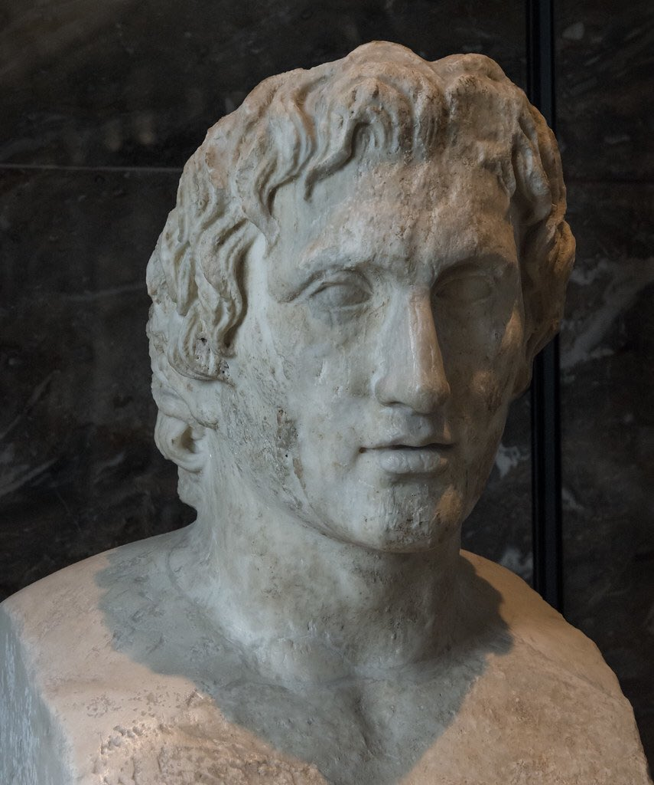
알렉산드로스의 두상 · 리시포스(Lysippos) 양식의 헬레니즘 복제본. 알렉산드로스가 유일하게 자신의 모습을 새기게 허락한 조각가가 리시포스였다.
이름은 그리스어로 "지키는 자(alexein) + 사람(anēr)" — "사람들의 수호자"를 뜻했다. 필리포스의 6대조까지 거슬러 올라가는 아르게아스(Argead) 왕가는 자신들의 혈통을 헤라클레스까지, 어머니 쪽으로는 트로이의 영웅 아킬레우스까지 끌어올렸다. 어린 알렉산드로스의 머리맡에는 늘 호메로스의 『일리아스』가 놓여 있었고, 그는 평생 그 책을 단검과 함께 베개 아래 두고 잤다.
곁가지 하나 — 뱀과 함께 자던 어머니
올림피아스에 관한 이야기는 그녀의 시대에도 무성했다. 그녀는 디오니소스의 비교(秘敎) 사제로, 침소에 길든 뱀들을 두고 잤다. 어느 날 밤 필리포스가 잠든 아내 곁에 거대한 뱀이 똬리를 튼 것을 보고는 그 후로 다시는 그녀의 방에 들지 않았다고 한다. 이 이야기를 후세 사람들은 다른 방식으로 읽었다 — 그러므로 알렉산드로스의 진짜 아버지는 뱀의 모습으로 강림한 제우스다. 알렉산드로스가 죽은 뒤 이집트의 사제들이 발 빠르게 퍼뜨린 이야기이기도 했다.
곁가지 둘에 가까운 — 한쪽 푸르고 한쪽 검은 눈
그의 신체적 특징은 후세 정복자들이 자신의 흉상을 그와 닮게 새기게 만든 도상의 표준이 되었다. 플루타르코스는 그가 평생 자신의 모습을 새기는 일을 단 한 조각가에게만 허락했다고 적었다 — 시키온의 리시포스(Λύσιππος). 화가는 아펠레스, 보석조각은 피르고텔레스만이 허락받았다. 리시포스가 새긴 알렉산드로스의 디테일은 다음과 같다 — 목이 살짝 왼쪽으로 기울어져 있었고, 시선은 위를 향해 녹는 듯했고, 한 눈은 밤처럼 검고 다른 한 눈은 하늘처럼 푸르렀다(ἕτερον γλαυκόν, ἕτερον μέλαν). 헤테로크로미아(이색증)였던 것으로 추정된다. 키는 고대 사료를 종합하면 165cm 전후로 마케도니아 평균보다 오히려 작았다. 그러나 가슴팍은 자주 발갛게 달아올랐고, 그의 살갗에서는 향내가 났다고 플루타르코스는 적었다 "마치 신의 몸에서 풍기는 듯한 향이었다." 디오게네스가 그를 마주했을 때 흔들리지 않은 사람은 그를 모르고 본 사람이 아니라, 알면서도 일부러 보지 않은 사람이었다.
[Perseus Digital Library, Plutarch, Alexander 4 · Bente Kiilerich, "The Head Posture of Alexander the Great"]
마케도니아
아버지 필리포스 2세는 그가 태어난 그해, 포티다이아를 함락하고 트라키아의 금광 도시 크레니데스를 차지해 도시 이름을 필리포이로 바꾸었다. 알렉산드로스 탄생의 소식은 세 가지 승전보 포티다이아 함락, 일리리아 정벌, 올림픽 경마 우승 와 함께 같은 날 전령을 통해 필리포스에게 닿았다고 한다.
아테네 · 그리스
30대의 청년 변호사 데모스테네스가 정치 무대에 갓 등단해 마케도니아를 경계하는 첫 연설들을 준비하던 때. 스파르타는 레욱트라(BC 371)의 패배 이후 회복하지 못한 채 펠로폰네소스의 한 도시국가로 줄어들었다.
페르시아 제국
대왕 아르타크세르크세스 3세가 즉위한 지 2년째. 그는 즉위와 동시에 형제·왕족 80여 명을 학살해 권력을 다지고, 이집트와 페니키아의 반란을 진압하던 중이었다. 페르시아의 대장(大將) 바고아스(Bagoas)라는 환관이 궁중에서 권력을 키우고 있었다 — 18년 뒤 그가 페르시아의 운명을 바꾼다.
이집트
마지막 토착 파라오 넥타네보 2세가 페르시아의 재정복을 막아내며 통치 중. 14년 뒤 그가 패망하면 이집트의 토착 왕조는 영원히 끝나고, 그 자리를 14년 후 한 마케도니아 청년이 차지하게 된다.
인도
마가다 왕국의 나다 왕조가 갠지스 평원을 다스리던 시기. 그 왕실의 한 미천한 종 어쩌면 찬드라굽타 마우리아의 할아버지 가 훗날의 마우리아 제국을 잉태할 것이었다.
중국
전국시대(戰國時代). 진(秦)의 효공이 등용한 상앙(商鞅)이 바로 BC 356년에 제1차 변법(變法)을 단행했다. 알렉산드로스가 펠라에서 태어나던 바로 그 해에, 진(秦)이 훗날 천하를 통일할 토대가 함양에서 놓이고 있었다.
이탈리아
로마는 아직 라티움의 한 도시국가. 삼니움족과 첫 전쟁을 준비 중. 카르타고는 시칠리아에서 시라쿠사와 다투며 서지중해의 패자였다.
곁가지 — 페르시아가 기억하는 다른 탄생 신화 (피르다우시 『샤나메』)
천 년 뒤 페르시아인들은 같은 이야기를 정반대로 다시 썼다. 페르시아의 민족 서사시 『샤나메(شاهنامه, 王書)』를 쓴 피르다우시(Ferdowsi, 1020년경 사망)에 따르면, 알렉산드로스 페르시아어로 시칸다르(سکندر, Sikandar) 는 그리스인이 아니라 사실은 페르시아 왕 다라브(Dārāb)의 아들이었다. 다라브가 마케도니아의 왕 필쿠스(Filqus = 필리포스)의 딸 나히드(Nāhīd)를 아내로 맞았는데, 첫날밤 그녀의 입냄새가 견딜 수 없어 친정으로 돌려보냈다. 이미 임신한 상태였다는 사실은 아무도 몰랐다. 그렇게 그리스에서 자란 시칸다르는 페르시아의 마지막 대왕 다라(Dārā = 다리우스 3세)의 이복형이었다.
이수스에서, 가우가멜라에서 두 형제가 서로 모르고 칼을 겨눈 것이다. 베수스의 칼에 찔려 죽어가는 다라의 머리를 시칸다르가 무릎 위에 올려놓는 장면에서, 다라는 마지막 숨으로 그가 자기 동생임을 알아본다. "내 딸 록사나를 너에게 맡긴다"라 유언하고 죽는다. 그리스의 무자비한 정복은 페르시아의 시선에서 보면 형제간의 비극적 화해로 다시 쓰였다. 이방의 정복자를 흡수해 자기 신화로 만들어버리는, 페르시아 문명의 오랜 솜씨였다.
[Ferdowsi, Shāhnāmeh, "Eskandar-nāma" 부분 · British Library Asian & African Studies Blog (2022)]
II
BC 343–340년 · 미에자
미에자의 정원 — 아리스토텔레스의 제자
강의 듣기
"나는 아버지에게 생명을 빚졌으나, 아리스토텔레스에게는 잘 사는 법을 빚졌다." — 알렉산드로스가 훗날 한 말로 전한다.
열세 살의 왕자가 더 큰 가르침을 필요로 하자, 필리포스는 당대 그리스 최고의 두뇌를 불러들였다. 플라톤의 수제자였던 아리스토텔레스는, 일찍이 마케도니아의 어의(御醫)였던 니코마코스의 아들이었다. 필리포스는 그에게 알렉산드로스의 교육을 맡기고, 그 대가로 자신의 옛 군대가 파괴했던 아리스토텔레스의 고향 스타게이라를 복구해주었다.
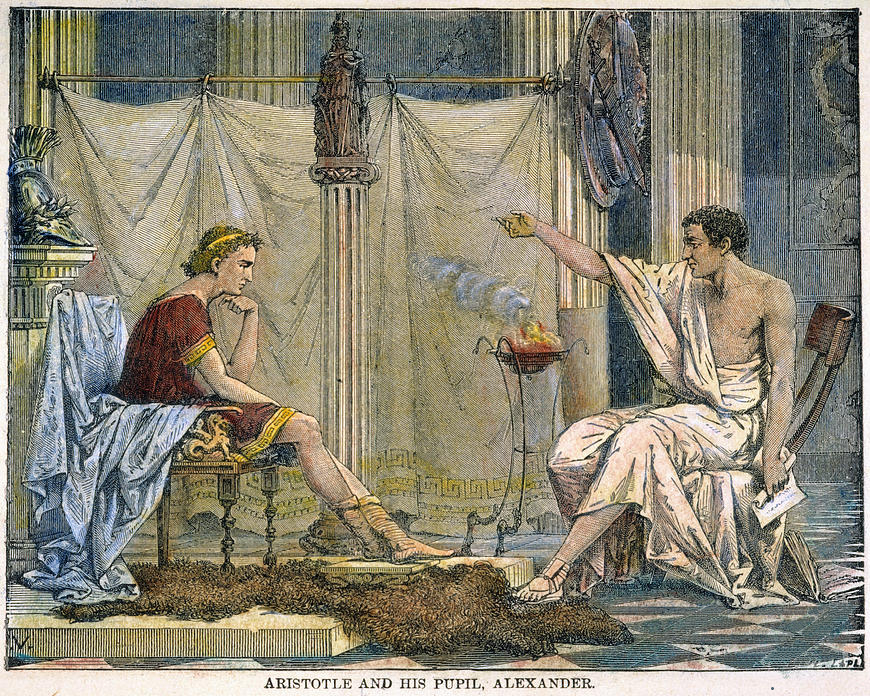
아리스토텔레스와 알렉산드로스 · 19세기 회화. 미에자(Mieza)의 님프 신전에서 3년간 이어진 사제 관계는 호메로스, 정치학, 의학, 자연사, 윤리학을 가르쳤다.
수업은 펠라가 아닌, 미에자 인근의 한 님프 신전(Nymphaeum)에서 이루어졌다. 동급생으로는 헤파이스티온(Hephaistion), 프톨레마이오스(Ptolemaios — 훗날 이집트의 왕), 카산드로스(Kassandros), 네아르코스(Nearchos) 등이 있었다. 이 소년들이 훗날 세계를 갈라 차지할 "왕의 친구들(hetairoi)"의 핵심이 된다.
아리스토텔레스는 알렉산드로스에게 호메로스 주석본을 한 권 직접 만들어주었다. 알렉산드로스는 이를 평생 "상자의 사본(casket copy)"이라 부르며 다리우스의 보석함에 넣어 가지고 다녔다. 그러나 스승의 가르침 모두를 따른 것은 아니었다. 아리스토텔레스는 그리스인을 자유민으로, 비(非)그리스인을 본래 노예라 가르쳤다. 알렉산드로스는 훗날 동방에 발을 들인 뒤로 그 가르침을 정면으로 거슬렀다.
곁가지 둘 — 함께 자란 친구, 칼리스테네스의 어두운 그림자
아리스토텔레스의 조카 칼리스테네스도 알렉산드로스의 학우였다. 후에 그는 알렉산드로스의 공식 역사가가 되어 동방 원정에 따라간다. 그러나 BC 327년 박트리아에서, 그는 알렉산드로스 앞에 엎드리는 동방의 예법(프로스키네시스)을 공개적으로 거부했고 — 결국 음모에 연루되어 옥사한다. 스승 아리스토텔레스가 카산드로스를 시켜 알렉산드로스를 독살했다는 후대의 음모설은 어쩌면 이 조카의 죽음에서 비롯된 원한의 그림자일지 모른다.
마케도니아
알렉산드로스가 미에자에서 호메로스를 읽고 있는 동안, 그의 아버지는 트라키아와 칼키디케 반도를 차례로 정리하고 올린토스(BC 348)를 함락해 멸망시켰다. 마케도니아의 영토는 그가 즉위했을 때의 세 배가 되어 있었다.
아테네
BC 351년부터 데모스테네스의 첫 「필리포스 탄핵 연설」이 아테네 광장에 울려퍼지기 시작했다. "여러분, 필리포스는 자고 있지 않습니다. 우리만이 자고 있습니다." — 그러나 아테네는 끝내 깨어나지 않았다.
이집트 · 페르시아
알렉산드로스가 13살이던 BC 343년, 페르시아의 아르타크세르크세스 3세가 이집트를 재정복했다. 마지막 토착 파라오 넥타네보 2세는 누비아로 도망쳤다. 페르시아의 정복은 잔혹했고 — 이집트인들이 페르시아인을 증오한 그 기억이, 11년 뒤 알렉산드로스를 해방자로 맞이하게 만든다.
인도 · 갠지스
마가다의 마지막 나다 왕조 다나난다(Dhana Nanda)가 등극. 거대한 부를 쌓았으나 가혹한 세금으로 민심을 잃었다. 그의 궁정에서 한 미천한 청년 후에 마우리아 제국을 세울 이 굴욕을 당하고 있었다.
III
BC 344년경 · 펠라
부케팔로스 — 누구도 길들이지 못한 말
강의 듣기
테살리아의 한 상인이 13탤런트의 가격을 부르며 큰 검은 말을 끌고 왔다. 이마에 황소 머리 모양의 흰 무늬가 있어 이름이 "부케팔로스(Boukephalos — '소머리')". 가격은 어처구니없었고, 더 어처구니없는 것은 말이 누구도 등에 태우지 않는다는 사실이었다. 필리포스가 분노하여 말을 돌려보내라 하자, 열두 살의 소년이 나섰다.
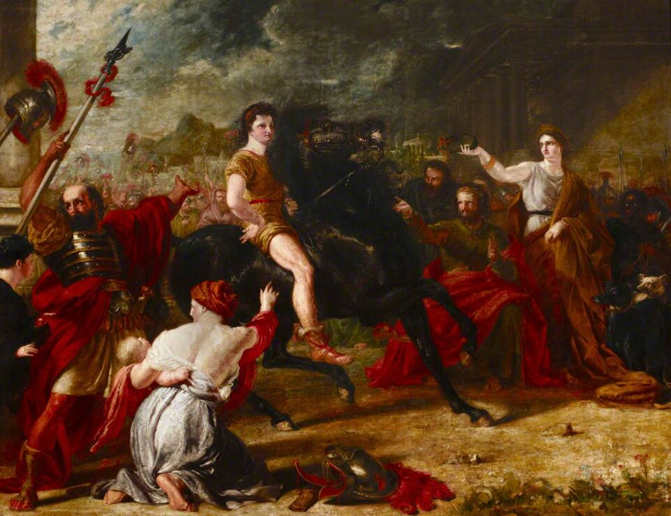
부케팔로스를 길들이는 알렉산드로스 · 벤자민 헤이든(Benjamin Robert Haydon, 19세기). 알렉산드로스는 말이 자기 그림자를 두려워한다는 것을 알아채고, 햇빛 쪽으로 머리를 돌려 안장에 올랐다.
플루타르코스가 전한 장면은 다음과 같다. 알렉산드로스는 말이 자기 그림자를 두려워한다는 사실을 간파한다. 그는 고삐를 잡고 말의 머리를 햇빛 쪽으로 돌려 그림자를 보지 못하게 한 뒤, 부드럽게 말을 어루만져 안장에 올랐다. 신하들이 숨죽이는 가운데 부케팔로스는 평원을 달렸다. 돌아온 아들을 보고 필리포스는 눈물을 흘리며 말했다고 한다.
아들아, 너에게 맞는 왕국을 따로 찾아라. 마케도니아는 너에게 너무 작다.
필리포스 2세 (플루타르코스 『영웅전·알렉산드로스』 6장)
부케팔로스는 그 뒤로 알렉산드로스만을 태우며 페르시아, 박트리아, 인더스 강까지 함께 갔다. 약 30년을 알렉산드로스의 곁에 있었으니, 고대 기준으로는 노쇠한 노병(老兵)이었다.
곁가지 셋 — 또 한 사람의 친구, 헤파이스티온
같은 또래의 헤파이스티온은 펠라에서 알렉산드로스가 가장 가까이 지낸 동무였다. 두 소년이 어떤 장면에서 처음 만났는지 사료는 침묵하지만, 트로이 성벽 앞에 도착한 23세의 두 청년이 아킬레우스와 파트로클로스의 무덤에 함께 화관을 바친 그날 — 동시대인들이 그 관계의 본질을 이미 알고 있었다는 사실은 말해준다. 부케팔로스가 말의 친구라면, 헤파이스티온은 사람의 친구였다. 알렉산드로스가 가장 먼저 잃을 친구이기도 했다.
곁가지 — 13탤런트짜리 말, 그 핏줄
13탤런트라는 가격은 황당한 액수였다 — 당시 마케도니아 보병 한 명이 1년에 받는 봉급의 약 300배. 부케팔로스의 품종은 테살리아(Thessaly) 최상품이었다고 전한다. 테살리아의 평원에서는 그리스 토종 말에 스키타이·페르시아의 니세아(Nisean) 종마를 교배한 거대한 군마가 자라났다. 필리포스 2세가 이 군마 산업을 키우려 2만 마리의 스키타이 종모를 마케도니아로 들여왔다는 기록이 있다. 알렉산드로스 자신도 후에 페르시아에서 5만 마리의 말을 공물로 받았다. 부케팔로스 한 마리의 핏줄에 발칸과 흑해와 카스피해와 페르가나의 초원이 흐르고 있었던 셈이다. 그 말이 펀자브에서 죽었을 때, 알렉산드로스는 도시 부케팔라(Bucephala)를 그 자리에 세웠다. 인간이 말에게 도시 하나를 통째로 바친 거의 유일한 사례다.
그리스 도시국가들의 자유는 이날 끝났다. 아테네와 테베의 연합군이 보이오티아 평원에서 마케도니아군과 맞붙었다. 필리포스는 일부러 우익을 천천히 후퇴시켜 아테네군을 끌어냈고, 그 사이 벌어진 적의 전열 틈으로 좌익을 맡은 열여덟 살의 알렉산드로스가 마케도니아의 핵심 기병대 "헤타이로이"를 이끌고 돌격했다.
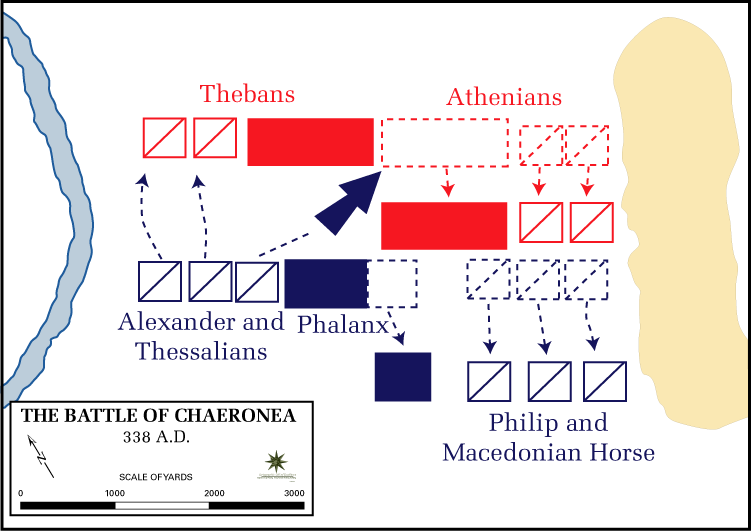
카이로네이아 전투, BC 338 · 알렉산드로스가 이끈 좌익은 테베의 신성대(神聖隊, Hieros Lochos)를 마지막 한 명까지 베었다. 발굴된 신성대 254구의 유골은 두 줄로 나란히 매장되어 있었다.
당시까지 무패였던 테베의 신성대 150쌍의 동성 연인으로 이루어진 정예부대 가 그 자리에서 전멸했다. 19세기에 발굴된 카이로네이아의 사자상 아래에는 254구의 유골이 두 줄로 누워 있었다. 알렉산드로스는 적군의 시신 앞에서 눈물을 흘리며 "이 사람들을 비겁한 짓을 했다고 말하는 자는 죽어 마땅하다"고 말했다 전한다. 이로써 코린토스 동맹이 결성되고, 필리포스는 그리스의 헤게몬(Hegemon)이 되어 페르시아 원정의 명분을 얻는다.
곁가지 넷 — 도망친 데모스테네스, 그리고 그의 변명
아테네 중장보병의 일원으로 카이로네이아에 참전했던 60대의 데모스테네스는 전열이 무너지자 방패를 던지고 달아났다. 후에 정적들이 그를 비웃자 그는 유명한 답을 했다: "도망친 자는 다시 싸울 수 있다(ἀνὴρ ὁ φεύγων καὶ πάλιν μαχήσεται)." 카이로네이아에서 그는 졌으나, 그 후 16년을 더 살며 알렉산드로스의 죽음 직전까지 마케도니아에 저항했다.
페르시아 — 같은 해의 또 다른 살해
카이로네이아 전투 직후 — BC 338년 후반, 페르시아의 권력자 환관 바고아스가 아르타크세르크세스 3세를 독살했다. 그가 세운 꼭두각시 왕 아르세스(아르타크세르크세스 4세)도 2년 뒤 같은 환관에 의해 살해된다. 페르시아 제국의 심장이 마비되는 동안, 발칸의 한 청년 왕자는 그리스 최고의 부대를 지휘하는 법을 배우고 있었다.
로마
같은 해 로마는 라틴 동맹 전쟁을 끝내며 라티움 전역의 패권을 확립했다. 지중해 양 끝에서 두 미래의 강자가 하나는 짧고 빛나게, 하나는 길고 묵직하게 동시에 부상하고 있었다.
코린토스
BC 337년, 코린토스 회의에서 그리스 도시국가 대표들이 모여 코린토스 동맹을 결성하고 필리포스를 헤게몬으로 추대했다. 회의의 명분은 "페르시아가 100년 전 그리스 신전을 불태운 죄에 대한 복수전". 스파르타만이 동맹을 거부했다 — "스파르타는 남을 따르지 않고 남을 이끄는 데에만 익숙하다."
V
BC 336년 가을 · 아이가이
아이가이의 칼날 — 아버지의 죽음
강의 듣기
필리포스가 새로 맞은 일곱 번째 아내 클레오파트라 에우리디케는 마케도니아 귀족 아탈로스의 조카였다. 결혼 피로연에서 아탈로스가 "이제 정통 마케도니아 후계자가 태어나길!"이라 축배를 들자, 알렉산드로스는 잔을 던지며 외쳤다. "그러면 내가 사생아라는 말이냐?" 필리포스가 검을 빼들고 일어났으나, 술에 취해 평상에서 굴러 떨어졌다. 알렉산드로스는 비웃었다 — "유럽에서 아시아로 건너간다는 사람이 침상 하나도 못 건너는구나."
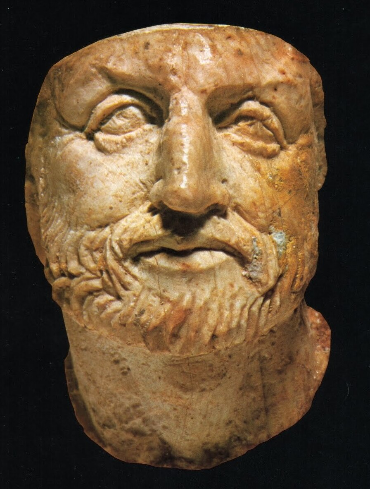
필리포스 2세 — 아이가이 왕묘 출토 상아 초상 · 1977년 그리스 베르기나에서 발굴된 그의 무덤은 20세기 최대의 고고학적 발견 중 하나로 꼽힌다. 한쪽 눈이 함몰된 모습이 두개골과 정확히 일치했다.
모자(母子)는 한동안 에페이로스로 망명했다. 부자는 다시 화해했으나 균열은 깊었다. BC 336년 가을, 옛 수도 아이가이에서 필리포스의 딸 클레오파트라가 알렉산드로스의 외삼촌(에페이로스의 알렉산드로스)과 혼인하는 거대한 축제가 열렸다. 극장으로 입장하던 필리포스는 호위병 파우사니아스의 단검에 옆구리를 찔려 절명한다. 파우사니아스는 도주하다가 포도밭 뿌리에 걸려 넘어졌고, 그 자리에서 추격해온 호위병 알렉산드로스의 친구들 의 창에 죽었다.
죽은 자는 말이 없다. 올림피아스가 배후라는 소문, 알렉산드로스 본인이 알았으리라는 의심, 페르시아의 사주(使嗾) 설이 모두 떠돌았다. 다만 결과는 분명했다 — 스무 살의 알렉산드로스가 그 자리에서 왕이 되었다.
곁가지 — 1977년 11월 8일, 베르기나의 흙더미를 열다
2,300년 동안 아무도 그 자리에 무엇이 묻혀 있는지 알지 못했다. 그리스 북부 베리아(Veria) 인근의 작은 마을 베르기나(Vergina) 사실은 옛 마케도니아 왕국의 첫 수도 아이가이(Aigai) 의 한 거대한 흙더미는 마을 사람들이 농경지로 쓰던 곳이었다. 그리스 고고학자 마놀리스 안드로니코스(Μανώλης Ἀνδρόνικος)는 30년을 이 흙더미를 파다가, 1977년 11월 8일, 마침내 둥근 천장의 옛 마케도니아식 무덤 위로 자신의 몸을 내려보냈다. 안에 도굴되지 않은 무덤 두 기가 있었다 — 그가 50년 발굴 인생에 본 적 없는 일이었다.
황금 화환과 황금 늘비흉수(라르낙스), 16각형 '베르기나의 태양'이 새겨진 황금 상자에는 한 남자의 뼈가 자줏빛 천에 싸여 있었다. 함께 있던 황금 정강이받이 한 쌍이 길이가 서로 달랐다. 한쪽 다리가 부러져 잘못 붙어 짧아진 사람을 위한 것 — 정확히 필리포스 2세의 부상 기록과 일치했다. 두개골의 오른쪽 눈자위에 외상의 흔적이 남아있었다 — 필리포스가 메토네 공성전에서 화살에 잃은 그 오른쪽 눈이었다. 옆 무덤(제3호)에서는 더 어린 청년의 유골이 나왔다 — 13세 무렵 사망. 알렉산드로스와 록사네의 외아들, 카산드로스에게 살해된 알렉산드로스 4세로 추정된다. 안드로니코스는 그 흙더미 옆에서 자신이 무엇을 발견했는지 깨닫고 무릎이 풀려 주저앉았다고 그의 일기에 적었다.
[Popular Archaeology, "Deciphering the Dead in the Royal Tombs of Macedon" · World History Encyclopedia · Museum of the Royal Tombs of Aigai]
곁가지 다섯 — 파우사니아스, 사적인 원한이라는 빈약한 동기
암살자 파우사니아스는 본디 필리포스가 총애하던 청년 호위병이었다. 사료(디오도로스)에 따르면 그는 새 왕비의 친척 아탈로스에게 잔혹한 능욕을 당한 뒤 필리포스에게 정의를 호소했으나 — 왕은 아탈로스가 정치적으로 너무 중요한 사람이라며 그 호소를 묻어버렸다. 그 7년 묵은 원한이 단검이 되어 왕을 찔렀다는 것이 통설이다. 그러나 두 마리 말이 그의 도주를 위해 도성 밖에 미리 매여 있었다는 사실은 그가 혼자가 아니었음을 시사한다. 누가 그 말을 매어두었는가? — 그 답을 아는 자는 모두 죽었다.
페르시아 — 정확히 같은 해, 새 대왕의 등극
알렉산드로스가 마케도니아의 왕좌에 오른 BC 336년, 페르시아에서도 새로운 대왕이 등극했다. 환관 바고아스가 자신의 꼭두각시로 세운 왕족 방계 다리우스 3세. 즉위 직후 다리우스는 바고아스가 자신에게도 독을 먹이려 하자 그 잔을 환관 본인에게 마시도록 강요해 죽였다. 똑똑한 처음이었다. 그러나 14년 뒤, 그 똑똑함은 알렉산드로스를 상대로 두 번이나 전장에서 도주하는 것으로 끝난다.
같은 해, 두 청년 왕이 같은 시간에 두 대제국의 왕좌에 올랐다. 그중 한 명은 곧 다른 한 명의 모든 것을 빼앗는다.
그리스
아버지의 죽음 소식이 전해지자, 아테네에서는 데모스테네스가 방금 자기 딸이 죽어 상복을 입고 있던 와중에 화관을 쓰고 시민들 앞에 나서 기뻐했다. 도시국가들은 마케도니아의 멍에가 풀렸다 여겼다. 1년 뒤 그들은 그 기쁨의 대가를 치른다.
Tabula I · Mundus Anno CCCXXXVI a.C.n.
BC 336년 — 스무 살의 왕이 물려받은 세계
마케도니아 + 코린토스 동맹페르시아 제국 (다리우스 3세)인도 마가다 (난다 왕조)바다
알렉산드로스가 즉위하던 해, 세계는 두 청년 왕의 손에 동시에 넘어갔다. 발칸의 한 작은 왕국과, 발칸에서 인더스 강까지 이어지는 거대한 제국 — 520만 km²의 페르시아는 당시 인류가 본 가장 큰 정치체였다. 한 사람은 다른 한 사람의 모든 것을 13년 안에 빼앗는다. 같은 해, 진(秦)에서는 효공이 죽고 그의 변법가 상앙도 곧 거열의 형을 받게 된다. 지중해 서쪽에서는 로마가 라틴 동맹과 갓 화해한 참이었다.
VI
BC 335년 · 테베
테베의 잿더미 — 그리스에 보낸 경고
강의 듣기
아버지의 죽음 직후, 알렉산드로스의 권력 정리는 가차없었다. 사촌 아민타스, 새 왕비 에우리디케와 그녀의 아기, 자신의 정적이 될 만한 모든 친족을 어머니 올림피아스의 손이 정리했다. 그러는 사이 그리스는 들썩였다. 트라키아·일리리아의 부족들이 봉기했고, 알렉산드로스는 한 해 동안 다뉴브 강까지 진군해 그들을 정리했다.
그가 멀리 떠난 사이, 그가 죽었다는 헛소문이 그리스에 퍼졌다. 테베가 봉기했다. 알렉산드로스는 13일 만에 700km를 행군해 테베 성 앞에 나타났다. 도시는 함락되었고 — 시민 6,000명이 학살되고 3만 명이 노예로 팔렸다. 동맹시들이 함께 의결한 결정으로, 테베는 완전히 파괴되었다. 단 하나의 집만이 남았다 — 시인 핀다로스의 옛집이었다. 신전과 그 시인의 집만이 살아남았다.
그리스 전체에 보낸 메시지는 분명했다. 더는 봉기하지 말라. 알렉산드로스는 다시 코린토스로 가 동맹의 헤게몬으로 추대받고, 페르시아 원정의 명분을 손에 쥐었다.
곁가지 여섯 — 통 속의 디오게네스
코린토스에서 그리스의 명사들이 그를 알현하러 줄을 섰는데, 단 한 사람이 오지 않았다. 그 유명한 견유학파 디오게네스. 호기심에 알렉산드로스가 직접 찾아가니, 노철학자는 통(pithos) 옆에서 햇빛을 쬐고 있었다. "내가 그대를 위해 무엇을 해줄까?"라 묻자 디오게네스가 답했다: "햇빛이나 가리지 말고 비키시오(μικρὸν ἀπὸ τοῦ ἡλίου μετάστηθι)."
주위에서 비웃자 알렉산드로스는 진지하게 말했다: "내가 알렉산드로스가 아니라면, 디오게네스이고 싶다." 11년 뒤 두 사람은 같은 해(BC 323)에 죽는다 — 디오게네스는 코린토스에서, 알렉산드로스는 바빌론에서. 같은 날에 죽었다는 설도 있다. 한 사람은 통 안에서, 한 사람은 세계 위에서.
곁가지 일곱 — 데모스테네스의 묘책, 다리우스의 페르시아 황금
테베가 봉기하기 전, 데모스테네스는 페르시아의 다리우스 3세에게서 황금을 받았다. 알렉산드로스가 트라키아에서 죽었다는 헛소문 어쩌면 데모스테네스가 직접 퍼뜨린 이 그리스를 흔들고 테베의 봉기로 이어졌다. 적의 후방에 불을 지른 것이다. 페르시아 황금이 그리스 도시들 안에서 한동안 흘러다녔다. 알렉산드로스의 13일 행군은 그 황금의 흐름까지 함께 짓밟았다.
페르시아 — 환관의 마지막 해
테베가 무너지던 BC 335년, 페르시아 궁중에서는 환관 바고아스가 자기 손으로 세운 새 왕 다리우스 3세에게 독배를 권하다 — 도리어 자신이 그 잔을 마시고 죽었다. 18년간 두 명의 대왕(아르타크세르크세스 3세·아르세스)을 살해한 그 환관의 시대가 끝났다. 그러나 다리우스의 페르시아는 이미 깊이 흔들리고 있었다 — 이집트는 마지못해 복종 중이었고, 페니키아 도시들은 들썩였으며, 변경 사트라프들의 충성은 의심스러웠다.
시칠리아 · 카르타고
코린토스 출신의 장군 티몰레온이 시라쿠사의 폭정을 무너뜨리고 시칠리아 그리스인의 자유를 회복한 직후 사망했다(BC 337). 그가 죽자 카르타고는 다시 시칠리아 서부로 야금야금 손을 뻗었다. 알렉산드로스가 동방으로 가는 동안, 같은 그리스 세계의 서쪽 절반은 새로운 정복자 없이 옛 카르타고-시라쿠사의 진흙탕 싸움으로 돌아갔다.
로마
BC 338년 라틴 전쟁을 끝낸 로마는 라티움 전역을 흡수하며 도시 시민권의 등급제(civitas sine suffragio)를 발명했다 — 정복지의 주민을 완전 시민·투표권 없는 시민·동맹시·속국으로 나누어 다스리는 시스템. 알렉산드로스가 한 세대 만에 무너뜨릴 정복 제국과 달리, 로마의 이 행정 발명품은 500년 갈 제국의 토대가 된다. 두 사람 알렉산드로스와 어느 무명의 로마 행정관 이 같은 시대에 정반대의 방식으로 "넓은 땅을 어떻게 다스릴 것인가"를 답하고 있었다.
중국 · 진(秦)
BC 338년, 진 효공이 죽자 새 왕에게 미움을 산 변법가 상앙(商鞅)이 도주하다가 자기 변법의 호적제도 때문에 신분증명이 없는 자에게 잠자리를 빌려주지 않는다는 자신이 만든 법 때문에 여관에 들지 못하고 잡혀, 거열형(車裂刑)을 당했다. 자기 법에 자기가 갈가리 찢긴 것이다. 그러나 그가 세운 법은 그대로 살아남아, 100년 뒤 진이 천하를 통일하는 동력이 된다. 그가 죽은 그해, 알렉산드로스가 카이로네이아에서 그리스의 자유를 찢고 있었다.
VII
BC 334년 봄 · 헬레스폰토스 → 그라니쿠스
헬레스폰토스를 건너 — 그라니쿠스의 첫 충돌
강의 듣기
BC 334년 봄, 약 4만 8천 명의 보병과 6,100기의 기병, 160척의 함선을 거느린 청년 왕이 헬레스폰토스(다르다넬스) 해협을 건넜다. 그는 가장 먼저 배에서 창을 던져 아시아 땅에 박았다 — "신들이 주신 창으로 얻은 땅"이라는 선언이었다. 트로이아 유적에 들러 아킬레우스의 무덤에 화관을 바쳤고, 친구 헤파이스티온은 파트로클로스의 무덤에 바쳤다. 두 사람의 관계가 어떤 것이었는지를 동시대인들은 그렇게 이해했다.
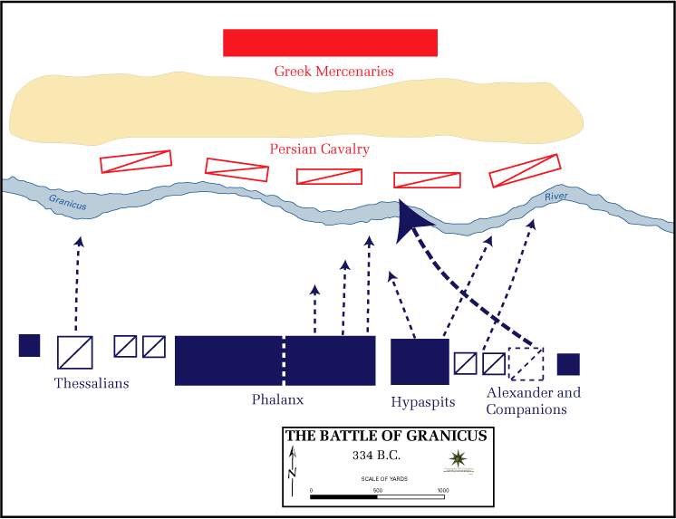
그라니쿠스 전투, BC 334년 5월 · 페르시아 사트라프 연합군이 강 동쪽 가파른 둑 위에 진을 쳤다. 알렉산드로스는 부하 파르메니온의 만류를 무릅쓰고 곧장 도강 돌격을 명령했다.
그라니쿠스 강(현재의 비가 차이) 동안에서 페르시아 변경 사트라프들의 군이 그를 기다렸다. 강을 건너는 적을 치는 것이 정석이었다. 알렉산드로스는 정석을 뒤집었다. 직접 우익 기병을 이끌고 강을 건너며 적의 사령부 한복판을 향해 돌격했다. 페르시아의 장수 스피트리다테스의 도끼가 그의 투구를 쪼개 머리카락이 잘리는 순간, 친구 클레이토스가 그 도끼를 든 팔을 잘라냈다.
승리 후 알렉산드로스는 300벌의 페르시아 갑옷을 아테네 파르테논 신전에 봉헌하며 비문을 새겼다: "필리포스의 아들 알렉산드로스와 그리스인들이(스파르타인을 제외하고) 아시아에 사는 야만인들로부터 거두어 바친다." 스파르타가 동맹을 거부한 데 대한 노골적인 모욕이었다.
곁가지 여덟 — 그를 막을 수 있었던 한 사람, 로도스의 멤논
페르시아 사트라프들의 작전회의에서, 단 한 명의 그리스인 로도스 출신의 용병 대장 멤논 이 옳은 전략을 내놓았다. "마을과 들판을 모조리 불태우고 후퇴합시다. 알렉산드로스의 군대는 보급이 없으면 굶어 죽습니다. 우리는 그 사이 함대로 그리스 본토를 공격해 그가 돌아갈 곳을 없앱시다."
페르시아 귀족들은 자신들의 영지가 불타는 것을 견딜 수 없어 거부했다. 멤논은 그 후 에게해 함대를 지휘하며 그리스 본토에 상륙을 시도했고 — BC 333년, 레스보스 섬을 포위하던 도중 병사했다. 그가 한 해만 더 살았다면, 알렉산드로스는 시리아의 좁은 들판에서 그리스 본토의 화염을 등 뒤에 두고 싸워야 했을 것이다. 역사의 만약(if) 중에 가장 큰 만약 하나가 그렇게 사라졌다.
그리스 본토 — 알렉산드로스가 떠난 사이
알렉산드로스가 아시아로 떠난 뒤 그리스의 섭정은 노장 안티파트로스가 맡았다. 그는 평생 알렉산드로스를 한 번도 보지 못한 채 그리스를 12년간 관리한다. 알렉산드로스와 안티파트로스는 점점 서로를 의심했고 — 알렉산드로스의 어머니 올림피아스가 그 의심에 끊임없이 부채질을 했다. 알렉산드로스가 죽은 직후, 그를 독살한 자라는 의심을 받은 자가 바로 이 안티파트로스의 아들 카산드로스였다.
이탈리아
같은 해 로마는 라티움에 이은 제2차 삼니움 전쟁의 초입에 있었다. 이탈리아 반도의 패권을 두고 로마가 진땀을 흘리고 있을 때, 발칸의 한 청년은 이미 페르시아 제국의 변경 사트라프를 격파하고 있었다.
VIII
BC 333년 · 고르디온 · 이수스
고르디우스의 매듭 / 이수스의 어머니
강의 듣기
소아시아를 종단해 프리기아의 옛 수도 고르디온에 다다랐다. 신탁이 말하기를, 도시의 위령단에 묶인 옛 마차의 매듭을 푸는 자가 아시아의 왕이 되리라 했다. 매듭은 너무 복잡해 어느 누구도 풀지 못했다. 알렉산드로스는 한참을 들여다보다가 검을 뽑아 단번에 잘랐다. "푼다(luō)"는 동사가 "자르다"도 의미한다는 해석이 가능했지만, 그 동작 자체가 그의 방식이었다.
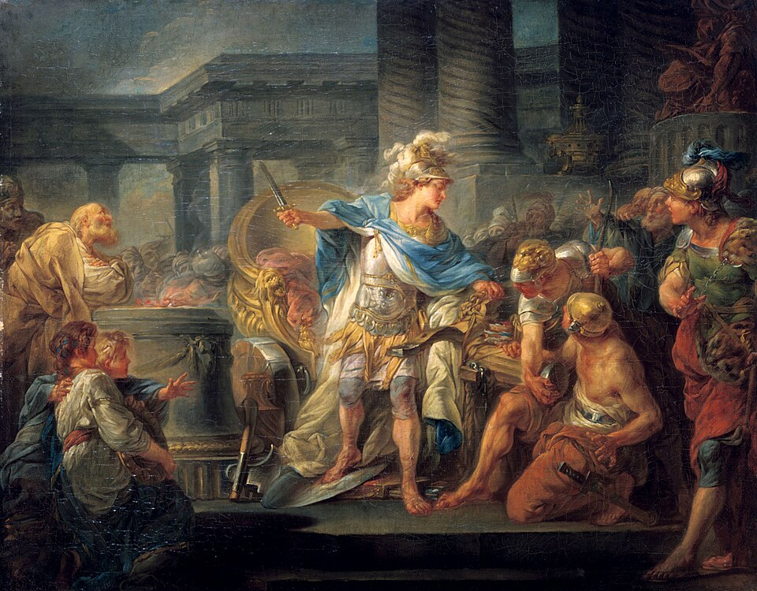
고르디우스의 매듭을 자르는 알렉산드로스 · 17세기 회화. 이 일화는 "복잡한 문제를 단호하게 끊는다"는 서구 언어의 관용구가 되었다.
같은 해 11월, 시리아 북부의 좁은 평원 이수스에서 페르시아의 대왕 다리우스 3세가 직접 이끄는 대군과 정면충돌했다. 다리우스는 좁은 지형이 자기의 수적 우위를 무력화한다는 사실을 미처 깨닫지 못했다. 알렉산드로스는 강을 건너며 곧장 다리우스의 황금 전차를 향해 돌격했고, 대왕은 전차를 버리고 도주했다.
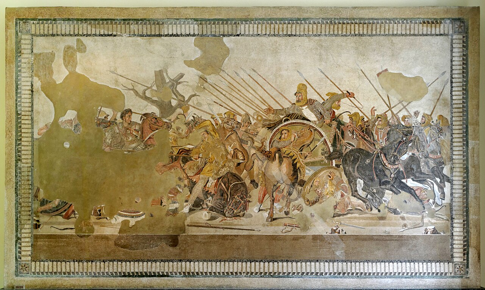
이수스 전투 모자이크 · 폼페이 "파우누스의 집"에서 출토(BC 1세기, 헬레니즘 원본의 모사). 약 200만 개의 4mm 테세라(tessera)로 된 5.8 × 3.1m 대작. 학계는 BC 315년경 그리스의 화가 에레트리아의 필록세노스(Philoxenos of Eretria)의 잃어버린 원본화의 모사로 본다 — 알렉산드로스가 죽은 직후 그를 직접 본 사람들의 기억으로 그려진 그림의, 두 세대 뒤의 모자이크 메아리. 창을 꼬나든 알렉산드로스(왼쪽)와 전차 위에서 두려움에 일그러진 얼굴로 그를 바라보는 다리우스(오른쪽)의 대비가 고대 회화 최고의 순간을 이룬다. 현재 나폴리 국립고고학박물관 소장. [Smarthistory · Khan Academy "Alexander Mosaic"]
다리우스의 막사에는 그의 어머니 시시감비스, 아내 스타테이라, 두 딸이 그대로 남아 있었다. 알렉산드로스는 그들에게 왕족의 예우를 다했다. 한 일화로, 시시감비스가 알렉산드로스 옆의 키 큰 친구 헤파이스티온을 왕으로 잘못 알고 그에게 절을 했다. 당황한 노부인에게 알렉산드로스가 웃으며 말했다 — "부인, 잘못이 아니십니다. 이 사람 역시 알렉산드로스입니다(καί οὗτος Ἀλέξανδρος)."
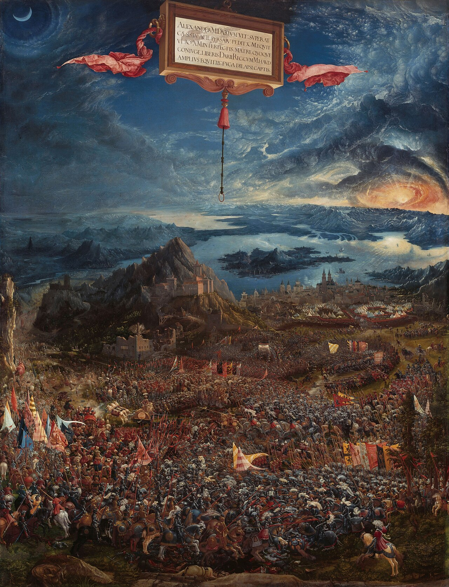
알브레히트 알트도르퍼, 「이수스 전투」(1529, 뮌헨 알테 피나코테크). 16세기 독일의 화가가 천년 전의 전투를 동시대 갑옷을 입은 군대로 그려냈다. 하늘이 우주의 무게로 무너지는 듯한 이 그림은 나폴레옹이 가장 사랑한 그림이었다고 전한다.
곁가지 아홉 — "내가 알렉산드로스라면" / "내가 파르메니온이라면"
이수스 직후, 다리우스는 사절을 보내 강화를 제안했다. 가족의 몸값으로 막대한 금, 유프라테스 서쪽의 모든 영토, 그리고 자신의 딸 스타테이라를 알렉산드로스의 아내로 주겠다는 조건이었다. 알렉산드로스의 노장 파르메니온이 만족스레 말했다: "내가 알렉산드로스라면, 받아들이겠습니다."
알렉산드로스는 한참을 침묵하다 답했다: "나도 그렇겠지 — 내가 파르메니온이라면."
그는 답장에서 다리우스에게 이렇게 적었다: "앞으로 나에게 글을 보내실 때는 '아시아의 왕 알렉산드로스에게'라 적으시오. 그리고 무엇을 청하시려거든, 동등한 자가 아니라 청원하는 자로서 직접 찾아오시오." — 이 답장이 다음 전투, 가우가멜라를 예고했다.
같은 해 이탈리아 — 또 한 사람의 '알렉산드로스'
이수스의 알렉산드로스가 다리우스의 가족 앞에 무릎을 꿇리던 같은 해, 이탈리아 남부에서는 또 한 명의 알렉산드로스가 칼을 휘두르고 있었다. 마케도니아 알렉산드로스의 외삼촌이자 어머니 올림피아스의 친동생인 에페이로스의 알렉산드로스다. 그는 BC 334년 타렌툼의 부름을 받아 이탈리아 그리스 도시들을 도우러 건너가, 루카니아·브루티움·삼니움 부족들과 전쟁 중이었다. 그가 마지막으로 남긴 편지에서 누이에게 말했다 — "나는 사내들과 싸우는데, 내 조카는 여자들과 싸우는구나(페르시아의 사치한 군대를 비꼬는 말)." 두 알렉산드로스의 운명은 정반대였다. 마케도니아 조카가 다리우스의 가족을 사로잡은 그해, 에페이로스 외삼촌은 BC 331년 판도시아에서 함정에 빠져 머리만 잘려 가족에게 돌아오게 된다.
그리스 — 멤논의 죽음, 페르시아의 마지막 해상 카드
이수스가 벌어지기 몇 달 전, 페르시아 함대를 지휘하며 그리스 본토를 위협하던 로도스의 멤논이 레스보스 섬을 포위하던 중 병사했다. 그가 한 해만 더 살았어도, 마케도니아 본국이 등 뒤에서 봉기에 휘말렸을 것이다. 그의 죽음과 함께 알렉산드로스를 막을 마지막 현실적 전략이 사라졌다. 스파르타의 왕 아기스 3세는 멤논이 남긴 페르시아 황금으로 막 용병을 모으는 중이었다.
이집트 — 마지막 해의 페르시아 통치
페르시아의 사트라프 마자케스가 다스리던 이집트는 이수스의 패전 소식을 듣고 이듬해 알렉산드로스가 가자에서 펠루시움으로 진군해오자 싸우지 않고 성문을 열기로 결정한다. 이집트인들은 200년 동안 페르시아를 두 번이나 쫓아내고 두 번이나 재정복당한 끝에, 페르시아를 향한 증오가 임계에 달해 있었다. 사트라프 마자케스의 항복은 사실 이수스에서 결정된 것이었다.
로마 · 카르타고
로마는 라티움 안정화 후 캄파니아 평원으로 영향력을 넓히는 중이었다. 5년 뒤(BC 326)부터 시작될 제2차 삼니움 전쟁이 잉태되고 있었다. 카르타고는 시칠리아에서 시라쿠사의 새 참주 아가토클레스와의 충돌을 준비 중이었다 — 이 청년 참주가 한 세대 뒤 카르타고 본토에 상륙해 한니발 가문을 떨게 한다.
IX
BC 332년 · 티루스 · 가자 · 이집트
티루스의 일곱 달 · 이집트의 신
강의 듣기
다리우스를 추격하지 않고 알렉산드로스는 남쪽으로 방향을 틀었다. 페르시아 함대의 본거지인 페니키아 해안을 무너뜨려, 그리스 본토를 위협할 적 함대의 보급을 끊으려 했다. 대부분의 페니키아 도시가 항복했지만, 섬에 자리잡은 티루스(Tyre)는 거부했다.
섬과 본토 사이는 800m. 알렉산드로스는 그 바다 위에 흙과 돌로 둑(causeway)을 쌓기 시작했다. 일곱 달이 걸렸다. 티루스인들이 화공선으로 둑을 태우면 다시 쌓았고, 알렉산드로스는 키프로스·페니키아의 항복 함대로 해상을 봉쇄했다. BC 332년 7월, 도시는 함락되었다. 도시민 8천이 죽고 3만이 노예로 팔렸다. 알렉산드로스가 쌓은 둑은 모래가 쌓여 오늘날까지 남아, 티루스를 영구히 반도(半島)로 만들었다.
이집트는 다른 이야기였다. 페르시아의 강압 통치에 시달리던 그 땅은 그를 해방자로 맞았다. 멤피스에서 그는 파라오로 즉위했고, 시와(Siwa)의 아몬 신탁소까지 사막을 건너 순례를 떠났다. 그 자리에서 사제는 그를 "제우스-아몬의 아들"이라 불렀다 — 알렉산드로스의 자기 이해가 결정적으로 바뀐 순간이었다. 그는 더 이상 그저 필리포스의 아들이 아니었다.
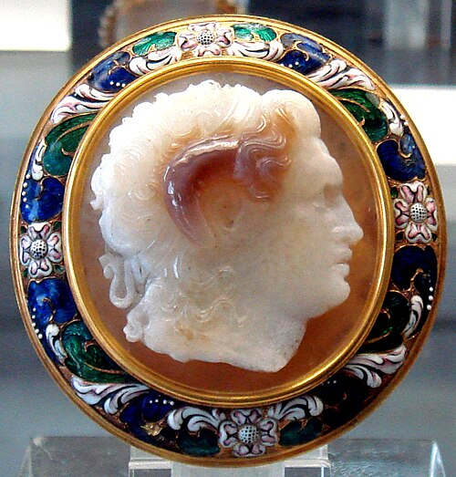
아몬의 뿔을 단 알렉산드로스 · 헬레니즘기의 카메오. 그의 사후 주조된 동전들은 그를 신의 뿔을 단 모습으로 새겼다. 이슬람 전승에서 그는 「두 뿔의 자(Dhul-Qarnayn)」로 기억된다.
이집트 나일 강 하구에 그는 자신의 이름을 딴 도시를 세웠다 — 알렉산드리아. 도시 계획은 직접 흙바닥에 그렸다. 빵가루로 도면을 그리는데 새들이 날아와 다 먹어치웠다고 한다. 점쟁이들은 좋은 징조라 했다 — "도시가 천하의 모든 사람을 먹일 것이다." 그 알렉산드리아는 훗날 헬레니즘 세계의 학문 수도가 되어, 도서관과 무세이온, 등대로 천 년간 빛났다.
곁가지 열 — 호메로스가 그에게 알려준 항구
알렉산드로스는 알렉산드리아의 위치를 꿈에서 보았다고 전한다. 백발의 노인이 나타나 『오디세이아』의 한 구절을 읊었다 — "이집트 앞바다, 파로스(Pharos)라 부르는 섬이 있다." 깨어난 그는 그 섬 옆에 도시를 지을 자리를 정했다. 그가 호메로스를 침상 머리맡에 두고 잤다는 일화가 그저 어린날의 취향이 아니었음을 이 일화는 보여준다. 그가 세운 도시는 1,000년간 인류의 도서관이 된다.
그리스 — 스파르타의 마지막 반격
알렉산드로스가 시리아·이집트를 평정하는 동안, 그리스 본토에서는 스파르타의 왕 아기스 3세가 페르시아의 황금으로 무장한 용병들을 이끌고 마침내 봉기했다(BC 331). 안티파트로스가 이끄는 마케도니아 수비대와 메갈로폴리스 전투에서 격돌했고 — 아기스는 부상으로 전사했다. 스파르타의 마지막 군사 행동이었다. 아테네는 끝내 가담하지 않았다 — 다음 한 세대 동안, 그리스 본토는 침묵한다.
페르시아 본토
다리우스 3세는 도주한 이수스 이후 메소포타미아에서 전군을 재소집했다. 인도와 박트리아의 사트라프들이 처음으로 코끼리 부대와 낫이 달린 전차를 끌고 모여들었다. 가우가멜라가 그를 기다리고 있었다.
X
BC 331년 10월 1일 · 가우가멜라
가우가멜라 페르시아의 종말
강의 듣기
다리우스는 이번에는 자신의 강점을 살릴 수 있는 평지를 골랐다. 오늘날 이라크 모술 인근의 가우가멜라 평원, 그는 미리 땅을 평탄히 다듬고 함정을 파지 않게 했다 — 전차와 코끼리가 자유로이 달릴 수 있도록. 페르시아 군대는 25만에서 100만(고대 사료의 과장)으로 전해지나 현대 학계는 약 10만으로 추정한다. 알렉산드로스의 군대는 그 절반에도 못 미쳤다(약 4만 7천).
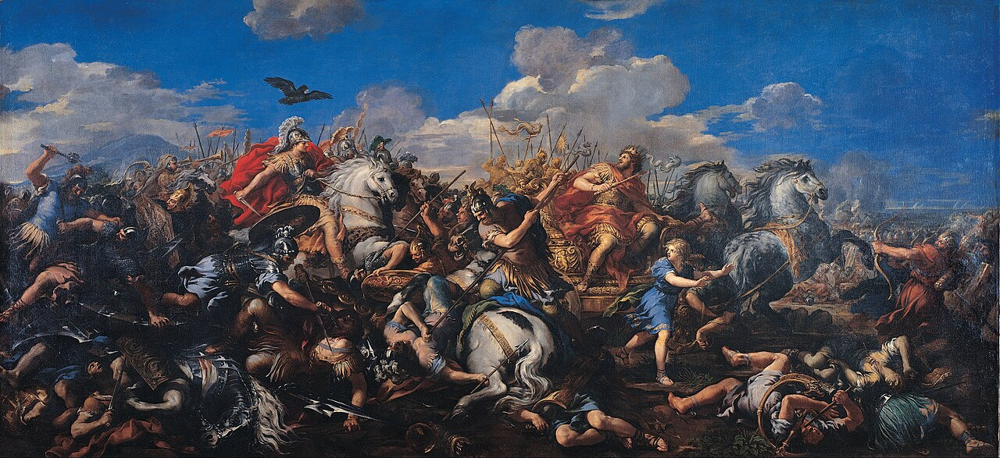
피에트로 다 코르토나, 「알렉산드로스와 다리우스의 전투」(17세기) · 바로크 시기의 전쟁화는 가우가멜라를 인간 신체의 격렬한 회오리로 그렸다.
알렉산드로스의 전술은 그날 절정에 달했다. 그는 자신의 우익 기병을 점점 더 오른쪽으로 비스듬히 이동시켜, 다리우스가 새로 다진 평지 밖으로 페르시아의 좌익을 따라오게 만들었다. 페르시아군의 전열에 작은 균열이 생기는 순간, 알렉산드로스는 쐐기형 돌격으로 그 틈을 향해 곧장 달렸다. 그 끝에는 다리우스가 있었다. 다리우스는 다시 도주했다.
같은 날, 그의 좌익을 맡은 노장 파르메니온은 위기에 몰려 도움을 요청했다. 알렉산드로스는 추격을 멈추고 돌아서야 했다. 그러나 전투는 끝났다. 아시리아인들이 점토판에 그날의 일식과 패전을 기록했고, 그 점토판은 오늘날 대영박물관에 남아있다.
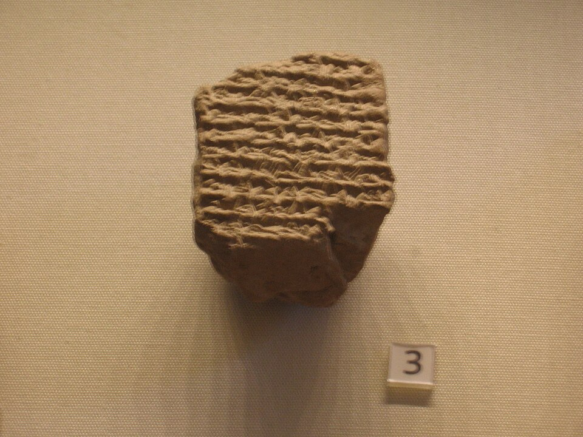
바빌론 천문 일지 · 대영박물관 소장. 가우가멜라 패전과, 훗날 알렉산드로스의 죽음까지 동시대 기록한 유일한 비(非)그리스 사료다.
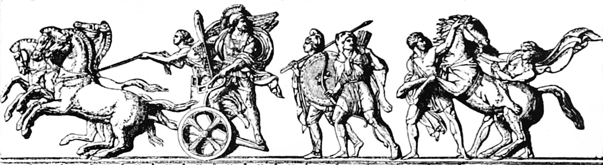
샤를 르 브룅, 「알렉산드로스의 바빌론 입성」(17세기) · 가우가멜라 직후 바빌론은 성문을 열어 그를 맞았다. 도시는 정복이 아닌 해방으로 그를 받아들였다.
곁가지 열하나 — 전투 전날 밤의 두 광경
전투 전날 밤, 페르시아 진영에서는 횃불이 끝없이 이어졌다. 다리우스는 군대를 밤새 무장 대기시키며 마케도니아군의 야습을 대비했다 — 군사들은 잠을 자지 못한 채 동이 텄다. 마케도니아 진영에서는 정반대였다. 파르메니온이 야습을 권하자 알렉산드로스는 답했다: "나는 승리를 훔치지 않는다(οὐ κλέπτω τὴν νίκην)." 그는 그날 밤 깊이 잠들었다 — 부하들이 깨워야 할 만큼.
그 깊은 잠은 그의 신경을 보여주는 동시에, 의도된 연기였다. 잠든 왕의 모습은 부대 전체의 자신감을 증폭시켰다. 그가 다리우스보다 잠을 잘 잤다는 사실 하나가 다음 날의 승리를 절반쯤 결정했다.
곁가지 열둘 — 달이 사라진 밤
가우가멜라 전투 11일 전(BC 331년 9월 20일), 메소포타미아 전 지역에서 개기월식이 일어났다. 페르시아 사제들에게 달의 어두움은 왕의 어두움 — 곧 대왕의 몰락을 뜻했다. 알렉산드로스의 점쟁이 아리스탄데르는 정반대로 해석했다: 달이 동방(페르시아)을 상징하니 어두워진 것은 페르시아의 멸망. 점토판에 새겨진 그 월식의 기록이 가우가멜라의 정확한 날짜를 오늘날까지 우리에게 알려주는 단 하나의 증거가 되었다.
그리스 — 같은 해의 또 다른 결전
알렉산드로스가 가우가멜라에서 다리우스를 패주시키던 BC 331년 가을, 그리스 본토에서도 결정적 전투가 벌어졌다. 스파르타의 왕 아기스 3세가 페르시아 황금으로 무장한 1만의 용병을 이끌고 메갈로폴리스를 포위했다. 마케도니아 섭정 안티파트로스가 4만의 군대로 달려와 격돌 — 아기스는 한 무리의 적병에게 둘러싸인 채 무릎이 깨진 채로 일어나, 마지막으로 창을 던지고 전사했다. 스파르타가 200년 만에 처음 무릎 꿇은 순간이었다. 알렉산드로스는 그 소식을 듣고 다소 시큰둥하게 말했다고 한다 — "우리가 다리우스를 쫓을 때, 그리스에선 쥐들이 한바탕 싸웠던 모양이군."
이탈리아 · 에페이로스
같은 BC 331년, 알렉산드로스의 외삼촌 에페이로스의 알렉산드로스가 이탈리아 남부 판도시아 전투에서 전사했다. 머리만 잘려 나무에 걸렸다가 가족에게 돌아왔다. 가우가멜라의 승리 직후 알렉산드로스는 외삼촌의 죽음 소식을 받았다 — 자신의 이름을 가진 또 한 사람이 같은 해에 죽었다는 사실을, 그는 어떻게 받아들였을까. 이탈리아의 그리스 도시들은 보호자를 잃었고, 곧 로마가 그 자리를 채우러 내려간다.
로마
같은 해 로마에서는 알렉산드로스가 페르시아 제국을 무너뜨리는 사이 평민 출신 집정관 퀸투스 푸블릴리우스 필로(Q. Publilius Philo)가 처음으로 임페리움 연장(prorogatio imperii) 제도를 발명했다. 야전군 지휘관의 권한을 임기 후에도 연장해 전쟁을 마치게 하는 이 발명은 200년 뒤 카이사르가 갈리아를 정복할 수 있게 한 제도적 토대가 된다. 알렉산드로스가 칼로 제국을 만들 때, 로마는 법조문으로 제국을 준비하고 있었다.
중국 · 진(秦)
같은 해 진(秦)에서는 혜문왕이 등극한 지 7년차였다. 그는 상앙을 거열형으로 처형한 그 왕이지만, 상앙의 법은 그대로 두었다. 같은 해 위(魏)와의 외교를 정리하고 처음 '왕(王)'을 자칭하기 시작했다 — 그때까지 주(周) 천자만이 쓸 수 있던 칭호였다. 페르시아의 대왕이 마지막 칭호를 잃던 그해, 동쪽에서는 한 새로운 왕의 칭호가 시작되고 있었다.
Tabula II · Iter Primum CCCXXXIV–CCCXXXI
BC 334–331년 — 헬레스폰토스에서 가우가멜라까지
알렉산드로스의 행군 경로BC 331년 말까지 점령지아직 페르시아 영토⊗ 4대 회전(會戰) · ◯ 공성전
3년 만에 페르시아의 서쪽 절반이 알렉산드로스의 손에 들어왔다. 헬레스폰토스를 건넌 4만 8천의 청년 부대가 그라니쿠스에서 페르시아 사트라프들을, 이수스에서 대왕 본인을, 티루스에서 페니키아의 자존심을, 가우가멜라에서 페르시아 제국 그 자체를 차례로 무너뜨렸다. 그 사이 그리스 본토에서는 스파르타의 마지막 반란이, 이탈리아에서는 외삼촌 알렉산드로스의 죽음이, 중국 진(秦)에서는 첫 왕호의 선포가 같은 4년 안에 동시에 일어났다.
XI
BC 331–330년 · 페르세폴리스
페르세폴리스의 불 · 다리우스의 최후
강의 듣기
가우가멜라 이후 바빌론과 수사는 차례로 성문을 열었다. 알렉산드로스는 도시 금고에서 50,000탤런트의 은과 어마어마한 보물을 손에 넣었다. 그러나 그가 향한 곳은 페르시아 제국의 의례적 수도 페르세폴리스였다. 다리우스 1세와 크세르크세스가 세운, 페르시아 영광의 심장이었다.
BC 330년 봄, 알렉산드로스는 페르세폴리스에 입성했다. 도시는 약탈을 허용받았다 — 100여 년 전 페르시아군이 아테네 아크로폴리스를 불태웠던 일에 대한 보복이었다. 그러나 가장 큰 의문은 며칠 뒤 일어났다. 크세르크세스의 궁전이 불탔다. 한 전승에 따르면, 술에 취한 알렉산드로스가 아테네 출신 기녀 타이스(Thaïs)의 도발에 횃불을 들었다. 다른 전승은 이를 계산된 정치 행위로 본다 — "페르시아 원정의 명분이 끝났다"는 선언이었다.
다리우스 3세는 옛 자신의 부하 베수스에게 인질이 된 채 동쪽으로 도주 중이었다. 알렉산드로스가 맹렬히 추격했고, 베수스는 짐이 된 다리우스를 단검으로 찌른 뒤 도망쳤다. 알렉산드로스가 사막에서 다리우스를 발견했을 때 그는 이미 죽어가고 있었다. 알렉산드로스는 자신의 망토를 벗어 시신을 덮고, 페르시아의 왕묘에서 왕의 예우로 장사지냈다. 그리고 새 적을 정했다 — 찬탈자 베수스. 자신을 페르시아의 합법적 후계자로 자리매김하는 정치적 결단이었다.
곁가지 열셋 — 800명의 잘린 사람들
페르세폴리스로 가는 길목에서 알렉산드로스의 부대는 한 무리의 그리스인들을 만났다. 800명이 넘는 그리스 출신 장인·기술자·노예들이었는데, 페르시아 왕들이 그들을 도주하지 못하게 손이나 발, 코, 귀를 절단해놓았다. 어떤 이는 손목까지만, 어떤 이는 코와 한쪽 다리까지. 알렉산드로스는 그들을 보고 눈물을 흘렸고, 본국 송환을 제안했다. 그러나 그들 중 다수는 부끄러움 때문에 가족이 있는 그리스로 돌아가지 않고, 알렉산드로스가 새로 정착시켜준 마을에서 여생을 보내기를 선택했다. 페르시아 원정의 명분 "그리스인의 복수" 이 추상에서 살갗으로 바뀐 순간이었다.
조로아스터교가 기억하는 알렉산드로스 — '저주받은 자(Gizistag)'
그리스 사료가 알렉산드로스를 영웅으로 새기는 동안, 페르세폴리스의 잿더미 너머에서는 정반대의 기억이 자라났다. 사산조 페르시아의 조로아스터교 사제들이 남긴 팔라비어 문헌 『분다히신(Bundahishn)』, 『덴카르드(Dēnkard)』, 『아르다 비라프 나마그(Ardā Wīrāz Nāmag)』 에서 그는 단 하나의 형용사로 불린다. "가지스타크(gizistag)" — 저주받은 자. 아흐리만(악마) 자체를 가리키는 그 단어가, 인간 가운데 단 두 사람에게만 붙는다: 거짓의 화신 아즈히 다하카와 알렉산드로스.
죄목은 분명했다. ① 황금 잉크로 12,000장의 소가죽에 쓰여 페르세폴리스에 보관되어 있던 원본 『아베스타(Avesta)』를 그가 불태웠다. ② 그가 마기(Magi, 조로아스터교 사제)들을 학살해, 구전 전승의 끈이 끊겼다. ③ 그가 페르시아의 통일 왕권을 무너뜨려, 이후 500년간 페르시아가 작은 왕국들로 쪼개져 살게 만들었다. 『아르다 비라프』의 첫머리는 이렇게 시작한다 — "저주받은 자, 사악한 아흐리만의 정신을 품은 자, 로마인(=그리스인) 알렉산드로스가 이란땅에 들이닥쳐, 큰 폭정과 살인과 약탈을 저질렀다."
같은 한 사람이 마케도니아에서는 사람들의 수호자이고, 이집트에서는 제우스-아몬의 아들이고, 페르시아에서는 가지스타크다. 한 인생을 보는 세 개의 거울이, 그를 향해 동시에 다른 얼굴을 비추고 있었다.
[Encyclopaedia Iranica, "Alexander the Great II: In Zoroastrian Tradition" · British Library Asian Studies Blog (2023)]
곁가지 열넷 — 적장의 투항, 마자이오스
가우가멜라에서 페르시아 우익을 지휘한 노장 마자이오스(Mazaeus)는 알렉산드로스의 좌익(파르메니온)을 한때 거의 무너뜨릴 뻔했다. 그러나 다리우스가 도주하자 그는 바빌론을 알렉산드로스에게 평화롭게 넘기고 — 알렉산드로스에게 투항했다. 알렉산드로스는 그를 그대로 바빌론의 사트라프로 임명했다. 페르시아 귀족이 페르시아 영토를 다스리는 것 — 마케도니아 노병들이 보기에는 이해할 수 없는 결정이었지만, 알렉산드로스의 새 통치 철학의 첫 신호였다. 그는 정복자가 아니라 후계자가 되려 했다.
XII
BC 329–327년 · 박트리아 · 소그디아나
박트리아의 산 · 록사네
강의 듣기
이후 3년간 알렉산드로스는 오늘날 아프가니스탄·우즈베키스탄에 해당하는 산악 지대에서 가장 잔혹하고 가장 좌절스러운 전쟁을 치렀다. 베수스는 곧 잡혀 페르시아식으로 손발이 잘리고 처형되었다. 그러나 박트리아의 귀족 스피타메네스가 게릴라전을 이어갔다. 평원의 전투가 아닌 산악의 매복전이었다.
이 시기 알렉산드로스는 점점 동방화되었다. 페르시아식 의상을 입고, 페르시아 귀족들을 측근에 두고, 자신 앞에 프로스키네시스(proskynēsis — 신 앞에 엎드리는 절)를 요구하기 시작했다. 마케도니아의 장군들 카이로네이아 이래의 친구들 은 분노했다. 자유민 그리스인이 동방의 군주 앞에 엎드린다는 것은 도무지 받아들일 수 없는 일이었다.
균열은 폭력으로 터졌다. 한 만찬에서 술에 취한 친구 클레이토스 그라니쿠스에서 그의 목숨을 구했던 바로 그 자 가 알렉산드로스의 동방화를 비판하자, 알렉산드로스는 창을 잡고 그를 찔러 죽였다. 다음 날 그는 막사에서 시신을 안고 사흘을 굶었다고 한다. 후에 또 다른 모반 혐의로 노장 파르메니온의 아들 필로타스가 처형되었고, 파르메니온 본인은 멀리 메디아에서 알렉산드로스의 사자에 의해 살해되었다.
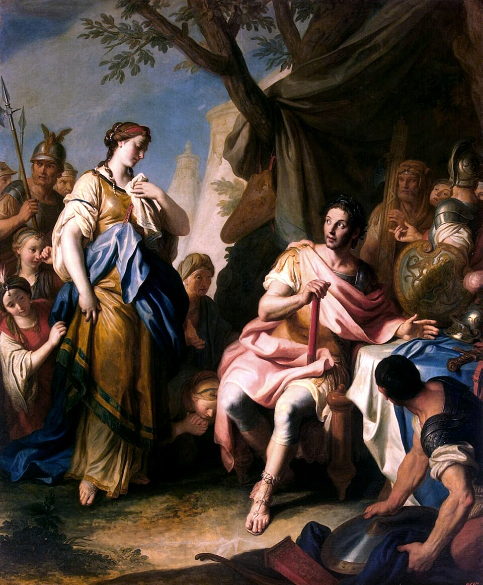
피에트로 로타리, 「알렉산드로스와 록사네의 결혼」(1756). BC 327년, 알렉산드로스는 함락한 산성에서 박트리아 귀족 옥시아르테스의 딸 록사네(Roxana, '작은 별')를 만나 결혼했다. 정치적 결합이자, 동시대인이 인정한 첫눈에 반한 사랑이었다.
곁가지 열다섯 — 시동들의 음모, 칼리스테네스의 비참한 끝
BC 327년, 마케도니아 왕실 시동(page)들의 음모가 발각되었다. 시동 헤르몰라오스가 사냥에서 알렉산드로스보다 먼저 멧돼지를 쏘았다는 이유로 매를 맞은 일이 발단이었다. 그는 동료 몇과 함께 잠든 왕을 죽이려 모의했다. 음모가 새어나오자 시동들은 모두 처형되었고 — 그 가르침의 스승인 칼리스테네스가 함께 잡혔다. 그는 프로스키네시스를 거부한 일로 이미 미움을 받고 있었다. 어떤 사료는 그가 옥에서 병사했다 하고, 다른 사료는 그가 사자 앞에 던져졌다 한다. 어쨌든 — 아리스토텔레스의 조카는 알렉산드로스의 막사에서 죽었다. 스승과 제자 사이에 처음으로 영원한 균열이 났다.
곁가지 열여섯 — 록사네는 어떻게 알렉산드로스의 시선을 사로잡았는가
박트리아의 험준한 산성 소그디안 록(Sogdian Rock). 산성의 수비대가 "발 달린 군대를 보내봐라, 우린 날개 달린 군대를 기다린다" 조롱하자, 알렉산드로스는 300명의 등반대를 모집해 야간에 깎아지른 절벽을 올랐다. 30명이 추락사했지만 새벽에 산성 머리에 마케도니아 깃발이 꽂혔다. 수비대가 항복하자 — 산성주 옥시아르테스의 딸들이 알렉산드로스 앞에 끌려나왔고, 그 중 록사네를 본 알렉산드로스가 한 신하의 표현대로 "전투에서 진 적이 없는 사람이, 한 여자의 눈에 졌다." 그는 정복자의 권리로 그녀를 취하지 않고, 마케도니아의 예법으로 빵을 둘이 함께 잘라 결혼했다.
지중해 서쪽 — 로마, 첫 거대전쟁의 문턱
알렉산드로스가 박트리아의 눈 덮인 산성을 오르던 BC 327년, 로마는 캄파니아의 그리스계 도시 네아폴리스(Neapolis · 오늘날의 나폴리)를 둘러싼 분쟁으로 제2차 삼니움 전쟁에 돌입했다. 이 전쟁은 22년을 끌며 알렉산드로스가 죽고 디아도코이가 서로를 죽이는 사이 로마를 이탈리아 중부의 명실상부한 패자로 키운다. 같은 시대에 동쪽에서는 한 인생이 빛처럼 타올랐다 식고, 서쪽에서는 한 도시가 오백 년 갈 제국의 첫 단추를 천천히 끼우고 있었다.
인도 마우리아의 잉태
알렉산드로스가 록사네와 결혼한 BC 327년 무렵, 갠지스 평원의 마가다 왕국에서 한 청년이 찬드라굽타 마우리아 그의 스승 차나캬(Cāṇakya · 카우틸리아)와 함께 난다 왕조를 무너뜨릴 계획을 짜기 시작했다. 인도 전승에 따르면 그는 펀자브 어딘가에서 알렉산드로스를 직접 만나기까지 했다. 『아르타샤스트라(Arthaśāstra)』 마키아벨리보다 1,800년 앞선 정치술의 교본 이 그 사이 정리되고 있었다. 그 책의 군사론 가운데 일부는 분명히 마케도니아의 사리사 부대를 본 자의 손에서 쓰였다.
중국 · 진(秦)
같은 시기 진 혜문왕은 변경의 의거융(義渠戎)을 격파하고 — 남쪽의 파(巴)·촉(蜀) 정복을 준비 중이었다(BC 316). 알렉산드로스가 힌두쿠시를 넘은 그 산맥의 또 다른 쪽 끝에서, 중국이 사천 분지로 들어가는 길을 열고 있었다. 장의(張儀)와 사마착(司馬錯)이 진의 신하로 봉직하던 시기다.
그리스 본토 — 침묵의 한 세대
가우가멜라의 메아리도, 스파르타의 패배도 가신 뒤 — 그리스 본토는 안티파트로스의 단정한 통치 아래에서 한 세대를 침묵했다. 아테네 광장에서 데모스테네스는 여전히 페르시아 황금이 들어오기를 기다렸으나, 황금은 더 이상 동쪽에서 오지 않았다. 황금은 이제 모두 — 알렉산드로스의 짐꾼들의 수레에 실려 박트리아의 산속으로 들어가고 있었다.
XIII
BC 326년 5월 · 펀자브 히다스페스 강
히다스페스 — 코끼리들의 강
강의 듣기
알렉산드로스는 인도로 향했다. 그에게 인도는 세계의 동쪽 끝, "외해(外海, Oceanus)"에 닿는 땅이었다. 힌두쿠시를 넘어 카불을 거쳐 인더스 강을 건넜다. 펀자브에 이르자 한 강 — 히다스페스(현재의 젤룸 강) 건너편에 인도 왕 포로스(Porus)의 군대가 진을 쳤다. 약 200마리의 전투 코끼리가 강안에 늘어서 있었다 — 알렉산드로스의 부대가 처음 마주하는 코끼리 부대였다.
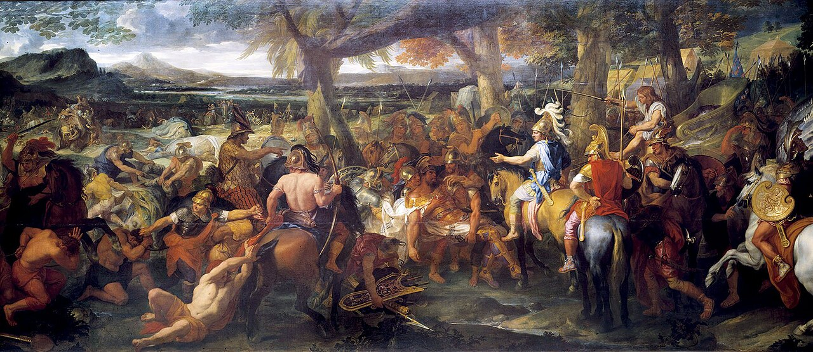
샤를 르 브룅, 「알렉산드로스와 포로스」(17세기, 루브르). 부상당한 포로스가 자신의 코끼리에서 내려와 알렉산드로스 앞에 끌려오는 순간을 그렸다.
강은 우기로 불어 있었고 건너편에 적이 있었다. 알렉산드로스는 며칠간 매일 밤 횃불을 들고 부대를 강안에서 행군시켜 포로스가 자신의 도강 지점을 가늠 못하게 했다. 그 사이 그는 27km 떨어진 상류의 한 굽이로 정예부대를 이끌고 야간에 도강했다 — 우기의 폭우와 천둥이 그의 움직임을 가렸다. 강을 건너서야 포로스의 아들이 이끄는 분견대와 만났고, 그를 격파한 뒤 본진과 정면 충돌했다.
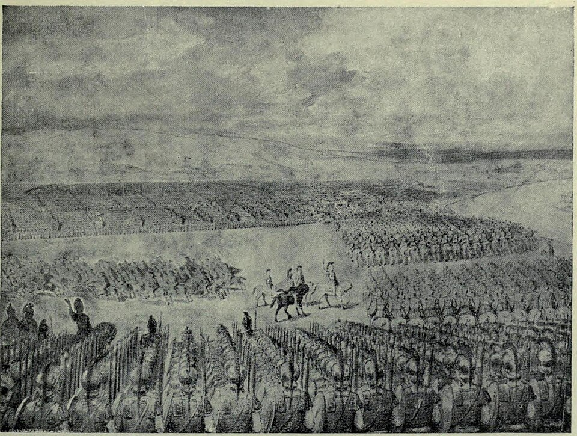
포로스의 코끼리 부대를 기다리는 알렉산드로스 · 앙드레 카스테뉴(19세기). 코끼리에 놀란 마케도니아 기병들의 말이 뒤로 물러섰다.
코끼리들은 마케도니아 보병에 막대한 피해를 입혔다. 그러나 알렉산드로스는 코끼리 사이의 좁은 공간을 보병들이 사리사(sarissa, 6m의 장창)로 메우게 하고, 코끼리 모는 자(마우트)를 활로 쏘아 떨어뜨렸다. 주인 잃은 코끼리들이 자기 군대를 짓밟으며 도주했다. 포로스의 인도군이 무너졌다. 부상한 포로스는 마지막까지 자기 코끼리 위에서 싸웠다.
알렉산드로스가 포로스에게 물었다 — "내가 어떻게 그대를 대하기를 원하느냐?" 포로스의 답이 전해진다: "왕답게(βασιλικῶς)." 알렉산드로스는 그를 자신의 사트라프로 임명해 자기 왕국을 그대로 다스리게 했다. 그러나 이 전투에서 부케팔로스가 부상으로 죽었다. 알렉산드로스는 그 자리에 "부케팔라(Bucephala)"라는 도시를 세워 친구의 이름을 남겼다.
인도 알렉산드로스 옆을 지나간 또 한 사람의 정복자
고대 인도의 전승에 따르면, 알렉산드로스가 펀자브에 머무를 때 그를 만나러 온 청년 망명객이 있었다 — 찬드라굽타 마우리아. 마가다 나다 왕조에 미움을 사 추방된 청년은, 알렉산드로스의 군대와 전술을 직접 눈으로 보았다. 16년 뒤 그는 인도 최초의 통일 제국 마우리아 왕조를 세운다. 알렉산드로스가 인도에 가져온 가장 큰 선물은 어쩌면 그를 본 한 청년의 야망이었다. 그 손자가 인도 전역에 불교를 퍼뜨린 아쇼카다.
알렉산드로스가 떠난 인도 잔류 그리스인들의 운명
알렉산드로스가 회군한 직후부터, 펀자브의 그리스 식민지들은 차례로 무너졌다. 찬드라굽타의 마우리아 군대가 그리스 사트라프들을 몰아냈다. 그러나 박트리아에서는 그리스-박트리아 왕국이 이어져, 200년 뒤까지 그리스어로 동전을 찍고 그리스 양식 부처를 새겼다.
곁가지 — 칸다하르의 두 언어 비문(1958년 발굴)
1958년, 아프가니스탄 칸다하르(قندهار) 근교 셰헬 지나(Chehel Zina) 산기슭에서 1미터 두께의 흙더미 아래 한 바위가 드러났다. 새겨진 글은 두 줄이었다 — 위쪽은 그리스어, 아래쪽은 아람어. 알렉산드로스가 죽은 지 약 60년 뒤인 기원전 260년경, 인도의 아쇼카 황제(Aśoka)가 새긴 칙령이었다. "왕 피요다세스(=피야다시, 아쇼카)는 즉위 10년에 깨달음을 펴신다(εὐσέβεια)…"로 시작하는 그 비문은 인도의 황제가 아프가니스탄의 그리스계 주민들에게 그리스어로 불교의 다르마를 설명하는 광경이다.
알렉산드로스의 이름이 도시 이름 알렉산드리아-아라코시아 (= 칸다하르)에 남았다는 것 못지않게 — 그가 남긴 언어가 그 도시에서 한 세대 이상 살아 숨쉬며, 마침내 인도의 황제가 자기 통치 철학을 그 언어로 새겨야 할 만큼 살아있었다는 사실을, 그 비석은 말없이 증언한다. 비석은 지금도 칸다하르 박물관에 있다 — 칸다하르라는 도시 이름 자체가 "칸다하르 ← 간다하르 ← 알렉산드리아의 변형"이라는 가설이 가장 유력하다.
[Kandahar Bilingual Rock Inscription (KAI 279), 1958년 발굴 · Wikipedia "Kandahar Greek Edicts of Ashoka" · MAP Academy]
곁가지 — 그리스 옷자락을 두른 부처(간다라 미술)
인류 역사상 한 종교가 다른 종교의 신상(神像)을 빌려 자신의 신을 표현하기 시작한 사례는 드물다. 간다라(Gandhāra) 오늘날 파키스탄 페샤와르와 아프가니스탄 동부 의 불교도들은, 알렉산드로스 사후 300여 년이 흐른 1–4세기, 부처의 형상을 아폴론을 닮은 청년 그리스 신의 모습으로 새기기 시작했다. 곱슬머리는 그리스풍 웨이브, 의복은 그리스 키톤의 주름으로 흘러내리고, 어깨 위로 늘어진 천의 사선은 미론이나 폴리클레이토스가 새긴 그리스 청년상의 그 천 그대로다.
알렉산드로스 이전의 인도에는 부처를 사람의 모습으로 새기지 않는다는 금기가 있었다. 부처는 발자국, 빈 옥좌, 보리수 잎으로만 표현되었다. 그러나 마케도니아 병사들이 박트리아와 펀자브에 남기고 간 그리스 양식의 신상 헬리오스, 아폴론, 헤라클레스 의 도상이 한 세대씩 인도에 스며들면서, 인류 최초의 인간형 부처상이 그리스 신의 옷을 입고 태어났다. 오늘날 일본 가마쿠라의 대불(大佛)도, 한국 석굴암의 부처도, 가장 거슬러 올라가면 — 펀자브의 한 강 옆에서 죽은 청년 정복자의 그림자 아래에 있다.
[Buddhistdoor Global, "Alexander the Great and the Buddha" · St James's Ancient Art, "Gandharan Art"]
Tabula III · Iter Orientale CCCXXX–CCCXXVI
BC 330–326년 — 페르세폴리스의 불에서 히다스페스의 코끼리까지
알렉산드로스의 행군 경로BC 326년까지 정복지가장 멀리 도달한 영역⊗ 회전 · △ 산성전 · 🜂 분서·방화 · ↺ 회군점
페르세폴리스의 궁이 불탄 봄(BC 330.1)부터, 부하들이 더는 가지 않겠다고 한 펀자브의 강(BC 326.7)까지 — 5년 만에 알렉산드로스는 이란 고원의 끝에서 인더스 강을 건너 펀자브까지 들어갔다. 그 사이 다리우스 3세는 자기 부하의 칼에 죽고, 페르시아 제국은 사라지고, 알렉산드로스는 박트리아의 록사네와 결혼해 동·서를 잇기 시작했다. 같은 5년 동안 — 로마는 이탈리아 첫 거대전쟁에 들어갔고, 인도에서는 한 청년 찬드라굽타가 마우리아 제국을 잉태하고 있었으며, 중국 진(秦)은 사천 분지로 뻗어내려갈 길을 열고 있었다. 알렉산드로스가 가장 멀리 갔던 그 강에서, 인류의 지정학적 지각판이 동시에 흔들렸다.
XIV
BC 326년 늦여름 · 히파시스 강
히파시스의 반란 — 부하들이 더는 가지 않겠다 했다
강의 듣기
승리 후 알렉산드로스는 동쪽으로 계속 나아가 갠지스 강 너머의 더 큰 왕국들을 정복하고자 했다. 그러나 히파시스 강(현재의 베아스 강) 앞에서 마침내 부대가 멈춰 섰다.
8년을 행군하며 17,000km 이상을 걸어온 부대였다. 부케팔로스를 잃은 왕은 점점 더 광기에 가까운 결단으로 그들을 몰아붙였다. 인도의 우기는 70일 가까이 비가 쉬지 않았고, 갑옷이 녹슬고 가죽이 썩었다. 마침내 부대장 코이노스(Coenus)가 전군을 대표해 왕에게 말했다 — "폐하, 부디 위대한 사람의 위대함은 멈출 줄 아는 데 있음을 아소서."
알렉산드로스는 사흘을 막사에 틀어박혀 침묵했다. 신탁을 다시 받게 했다 — 결과는 좋지 않았다. 그는 마침내 회군을 명령했다. 강가에 12개의 거대한 제단을 세워 자신이 가장 멀리 온 자리를 표시하고, 인도 군주가 보낸 거대한 선물들을 받아들였다. 알렉산드로스가 졌다 — 부하들에게.
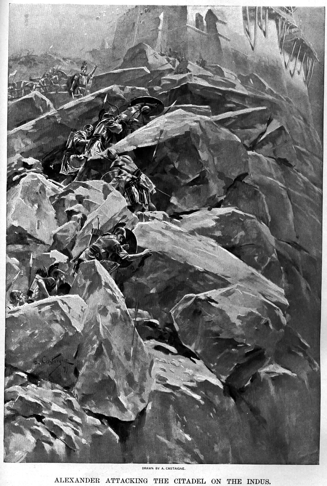
인더스 강의 성채를 공격하는 알렉산드로스 · 앙드레 카스테뉴. 회군길의 말리(Malli) 부족 성에서 알렉산드로스는 가장 먼저 성벽을 넘었다가 화살이 폐에 박혀 거의 죽을 뻔했다. 그는 죽지 않았다는 사실을 보이려 부상에도 부대를 사열했다.
곁가지 열일곱 — 벌거벗은 현자들
인도에서 알렉산드로스는 처음으로 그리스 철학과는 전혀 다른 사상을 만났다. 그가 사로잡은 10명의 김노소피스트(γυμνοσοφισταί, "벌거벗은 현자들") 자이나교 또는 초기 우파니샤드 수행자들로 추정되는 에게 그는 어려운 질문을 던지고, 가장 어리석은 답을 한 자를 죽이겠노라 선언했다. 그러나 답들이 모두 너무 훌륭해 그는 누구도 죽이지 못했다. 한 문답이 전한다:
"산 자가 많으냐, 죽은 자가 많으냐?" — 현자가 답했다: "산 자가 더 많습니다. 죽은 자는 더 이상 존재하지 않으니까요."
"사람이 어떻게 하면 신이 될 수 있는가?" — 답: "사람이 할 수 없는 일을 하면 됩니다." 그 답을 한 현자 칼라노스는 알렉산드로스를 따라 페르시아로 갔다.
강 건너의 마가다 — 알렉산드로스가 듣지 못한 이름
히파시스 강을 건넌 자들이 만나야 했던 것은 무엇이었을까. 갠지스 평원의 마가다 왕국은 당시 인도 최대의 제국이었다. 부하들이 알렉산드로스에게 보고한 적군의 추정치 "보병 20만, 기병 8만, 전차 8천, 전투 코끼리 6천 마리" 가 부대를 멈춰 세웠다. 히다스페스에서 포로스의 200마리 코끼리를 상대하느라 몇 천 명이 죽었던 부대였다. 6천 마리는 상상할 수 없는 수였다.
그 마가다의 왕좌에는 다나난다(Dhana Nanda)가 앉아 있었다 — 알렉산드로스보다 더 부유하고, 더 가혹하고, 자신의 평민 출신 때문에 귀족들에게 미움받는 폭군. 그의 궁정 어딘가에서 한 청년이 매를 맞으며 추방되고 있었다 — 찬드라굽타 마우리아. 알렉산드로스의 부대가 히파시스에서 돌아선 그해(BC 326)부터 5년 뒤(BC 321), 찬드라굽타가 다나난다의 머리를 베고 마우리아 제국을 연다. 알렉산드로스가 강 한 줄기를 건너지 않아 그가 만나지 못한 청년이, 다음 세대 인도의 주인이 된다. 두 정복자는 같은 강을 사이에 두고 끝내 마주치지 못했다.
지중해 — 같은 해 시작된 또 하나의 거대전쟁
알렉산드로스가 히파시스 앞에서 돌아선 BC 326년, 이탈리아에서는 로마와 삼니움 부족 사이에 제2차 삼니움 전쟁이 발발했다. 이 전쟁은 22년을 끌며 알렉산드로스가 죽고, 디아도코이가 서로를 죽이고, 그리스 문명의 동쪽 절반이 헬레니즘으로 재편되는 동안 묵묵히 로마를 이탈리아의 주인으로 만든다. 한 사람이 멈춘 자리에서, 한 도시가 시작하고 있었다.
중국
같은 BC 326년, 중국 진(秦)에서는 혜문왕의 정변에서 살아남은 장의(張儀)가 처음 진의 재상이 되었다. 그의 "연횡(連橫)"이 동방 6국을 진과 차례로 동맹시키며 분열을 가속화한다. 알렉산드로스가 회군의 길에 서고, 진의 외교가가 6국의 분열을 짜기 시작한 — 같은 해 같은 봄이었다.
XV
BC 325–324년 · 게드로시아 · 수사
게드로시아의 사막 · 수사의 합동결혼
강의 듣기
회군길은 정복보다 잔혹했다. 알렉산드로스는 함대를 만들어 친구 네아르코스에게 인더스 강에서 페르시아 만까지의 해로 탐사를 맡기고, 자신은 부대를 이끌고 게드로시아(현 발루치스탄) 사막을 가로질렀다. 함대를 따라 보급선을 유지하려는 시도였다.
지옥의 60일이었다. 식수가 떨어지고, 열사병으로 쓰러진 병사들이 모래에 그대로 묻혔다. 한 일화 — 부하들이 모래 속에서 짜낸 한 투구의 물을 왕에게 바치자, 알렉산드로스는 그 물을 모두가 보는 앞에서 모래 위에 부어버렸다. "전부가 마실 수 없다면, 나도 마시지 않겠다." 그러나 사막의 죽음은 그 일화로도 가려지지 않았다. 함께 들어간 자들의 4분의 3이 돌아오지 못했다 — 그가 평생 잃은 가장 많은 병사를 적이 아닌 그 사막에서 잃었다.
수사로 돌아온 알렉산드로스는 거대한 비전을 펼쳤다. 수사의 합동결혼식(BC 324년 봄) — 자신을 포함한 마케도니아 장수 80명이 페르시아 귀족 여성들과 같은 날 결혼했다. 알렉산드로스 본인은 다리우스의 딸 스타테이라와, 또 다른 페르시아 공주 파리사티스와 결혼했다(이미 록사네가 있었다). 헤파이스티온은 스타테이라의 동생 드리페티스와 결혼했다 — 두 친구의 자식들이 사촌이 되게 하려는 뜻이었다.
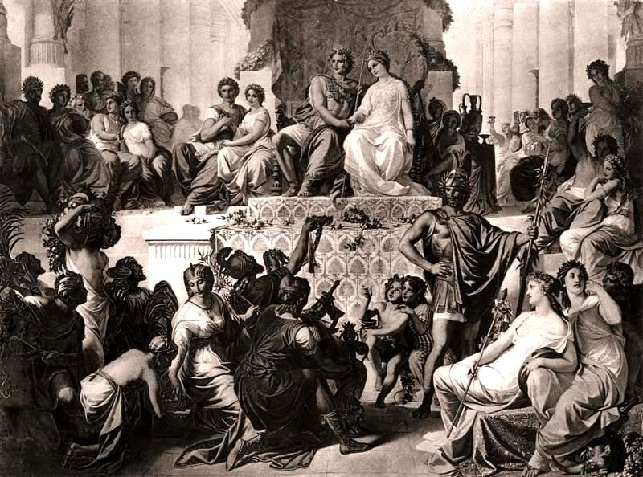
수사의 합동결혼식, BC 324년 · 19세기 판화. 동·서를 혼인으로 융합하려 한 policy of fusion의 정점. 동시에 마케도니아 노병들에게 깊은 불안을 심었다.
같은 시기 그는 오피스에서 노병들의 반란에 부딪혔다. 마케도니아 병사들은 자신들이 페르시아 병사들로 대체되고 있다 느꼈다. 알렉산드로스는 단상에서 그들을 꾸짖고, 13명의 주모자를 처형했다. 그러나 끝내는 사흘 만에 그들과 화해의 만찬을 열어, 마케도니아인과 페르시아인이 한 식탁에서 술잔을 나누게 했다 — 사상 처음으로.
곁가지 열여덟 — 칼라노스의 마지막 미소
인도 현자 칼라노스는 73세에 페르시아에서 처음으로 병에 걸렸다. 자신의 몸이 약해진 것을 느낀 그는 알렉산드로스에게 장작더미를 쌓아달라 청했다. 알렉산드로스는 만류했지만 그는 단호했다. 마케도니아 군대 전원이 도열한 가운데 그는 장작더미에 올라 가부좌를 틀고 앉아, 불꽃이 자신의 몸을 감싸는 동안 미동도 하지 않았다. 부하들이 슬퍼하자 칼라노스는 마지막으로 알렉산드로스에게 작별 인사를 보냈다: "우리는 곧 바빌론에서 다시 만나리다."
알렉산드로스는 그 말을 이해하지 못했다. 몇 달 뒤, 그는 바빌론에서 죽었다.
곁가지 열아홉 — 도망친 재무관 하르팔로스
알렉산드로스의 어린날 친구 하르팔로스(Harpalos)는 한쪽 다리가 불편해 전장에 나가지 못해, 대신 거대한 제국의 재무를 맡았다. 알렉산드로스가 인도에서 돌아온다는 소식에 그동안 횡령한 5,000탤런트와 6,000명의 용병을 거느리고 아테네로 망명했다. 아테네는 그의 돈을 받아 알렉산드로스에 대한 마지막 봉기 라미아 전쟁(BC 323) 의 자금으로 썼다. 하르팔로스는 크레타에서 자신의 부하에게 살해되었다. 데모스테네스가 그 돈의 일부를 받은 혐의로 추방당한 것도 이때다.
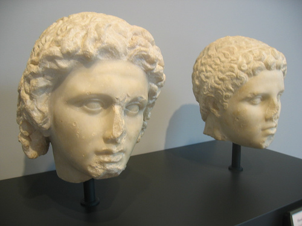
알렉산드로스와 헤파이스티온 · 헬레니즘 조각. 알렉산드로스는 헤파이스티온을 "내 또 다른 알렉산드로스"라 불렀다.
아테네 — 5천 탤런트의 황금이 도착했다
알렉산드로스가 게드로시아 사막에서 부하들을 잃고 수사로 돌아오던 BC 324년 봄, 그의 어린날 친구이자 제국 재무관 하르팔로스가 횡령한 5,000탤런트(고대 단위 최대치의 부)와 6,000명의 용병을 거느리고 아테네 페이라이에우스 항에 상륙했다. 60대 노년의 데모스테네스는 마지막 정치 도박을 했다 — 처음에는 하르팔로스의 입성을 막다가, 결국 일부 황금을 받았다는 의심을 사 추방되었다. 그 황금은 보관되었다가, 알렉산드로스가 죽자마자 라미아 전쟁(BC 323–322)의 자금으로 풀린다. 그리스 도시국가들의 마지막 자유의 함성은 한 횡령범의 금고에서 나왔다.
로마 — 삼니움의 협곡
같은 해 로마는 제2차 삼니움 전쟁의 두 해째를 지나고 있었다. 3년 뒤(BC 321)에 로마군 4개 군단이 카우디네 협곡(Caudine Forks)에서 삼니움의 함정에 빠져 전원이 옷을 벗고 멍에 아래를 기어 항복하는 로마사 최악의 굴욕을 당하게 된다. 알렉산드로스가 사막에서 4분의 3을 잃고 있을 때, 로마는 자기 역사의 가장 어두운 패전을 향해 가고 있었다. 그러나 로마는 그 굴욕에서도 배웠다 — 검 자루를 군단의 두루마기 형태로 바꾸고, 마니풀러스(maniple) 진형을 도입한다. 알렉산드로스의 팔랑크스를 200년 뒤 파괴할 새로운 보병 체계가 그 패전의 진흙 속에서 시작되었다.
인도 5년 뒤의 폭풍
같은 BC 324년 무렵, 찬드라굽타 마우리아는 펀자브의 산악 부족들 사이에서 게릴라 군대를 모으고 있었다. 알렉산드로스가 인도에 두고 간 사트라프 필리포스가 BC 326년 말 자기 부하들에게 살해된 직후부터, 그리스 진영은 펀자브에서 차츰 자리를 잃어가고 있었다. 그 진공을 찬드라굽타가 채웠다. 3년 뒤(BC 321) 그는 다나난다를 죽이고 마우리아 제국을 세우고, 그 16년 뒤(BC 305)에는 알렉산드로스의 후계자 셀레우코스 1세를 인더스 강 동안에서 격파해 — 그리스 세력을 인도에서 영구히 밀어낸다.
이집트 · 그리스 본토
이집트에서는 클레오메네스가 알렉산드로스의 재무관으로 활동하며, 곡물 매점매석으로 그리스 도시국가들에 막대한 부담을 안기고 있었다 — 알렉산드로스가 죽자마자 프톨레마이오스가 그를 처형하고 그 부를 자기 왕국의 종잣돈으로 삼게 된다. 마케도니아 본국에서는 어머니 올림피아스와 섭정 안티파트로스의 권력다툼이 막바지로 치달아, 안티파트로스가 자기 아들 카산드로스를 바빌론으로 변명하러 보낸다. 바로 그 카산드로스가, 한 세대 뒤 알렉산드로스의 모든 직계를 학살하는 자다.
XVI
BC 324년 가을 · 엑바타나
헤파이스티온의 죽음 — 알렉산드로스가 무너진 날
강의 듣기
엑바타나의 가을 축제 중, 헤파이스티온이 갑작스러운 열병으로 죽었다. 미에자의 정원에서 만나 33년을 함께한, 단 한 사람의 친구였다. 알렉산드로스의 슬픔은 동시대인들이 기록한 그 어떤 슬픔보다 거대했다.
그는 사흘 동안 시신 위에 엎드려 음식과 음료를 거부했다. 헤파이스티온을 치료한 의사 글라우키아스를 십자가에 못박았다. 도시의 모든 말과 노새의 갈기를 깎게 했다 — 옛 영웅 아킬레우스가 파트로클로스의 죽음에 그렇게 했듯이. 머리카락을 직접 자르고 패배자들이 하는 행동 헤파이스티온의 시신을 화장하기 위해 바빌론으로 가져갔다.
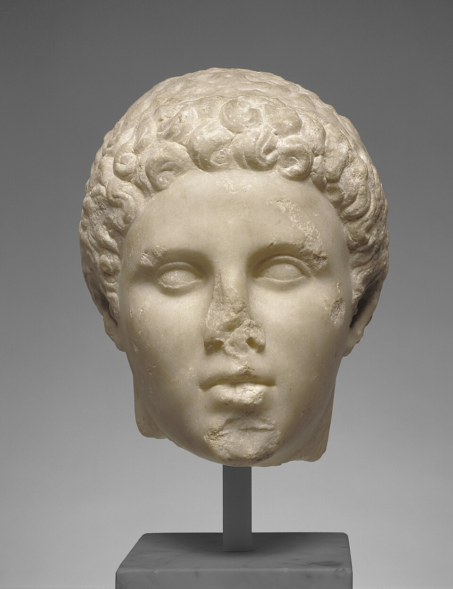
헤파이스티온 두상 · 로마 시기 복제본. 알렉산드로스는 헤파이스티온에게 영웅(hero)의 지위를 신탁으로 받아 그를 신격으로 모셨다.
알렉산드로스가 헤파이스티온의 장례를 위해 10,000탤런트(현재가치 수십억 달러)를 들여 거대한 화장식 단(壇)을 세우라 명령했다는 기록이 있다. 그는 더 이상 같은 사람이 아니었다. 한 친구가 죽은 자리에서 그의 자제력 그를 다른 정복자들과 갈라놓던 그 무엇 이 무너졌다.
곁가지 스물 — 슬픔이 정책이 된 순간
슬픔에 잠긴 알렉산드로스는 무모한 군사 행동에 나섰다. 엑바타나 인근의 코사이아(Cossaean) 산악 부족 페르시아 대왕들도 정복하지 못한 을 한 겨울 40일 만에 모두 진압하고, 그 학살을 "헤파이스티온의 영혼에 바치는 제물"이라 명명했다. 한 사람의 죽음이 한 부족의 멸절로 추모되었다. 알렉산드로스의 마지막 군사 행동이었다.
그리스 — 어머니와 섭정의 마지막 싸움
이 무렵 마케도니아 본국에서는 어머니 올림피아스와 섭정 안티파트로스 사이의 권력 다툼이 극에 달했다. 올림피아스가 아들에게 끊임없이 안티파트로스의 불충을 호소하자, 알렉산드로스는 안티파트로스를 소환하고 그 자리에 크라테로스를 보내려 했다. 안티파트로스는 본국에 남아 있던 아들 카산드로스를 바빌론으로 보내 변명케 했다. 카산드로스는 페르시아식 절을 하는 그리스인을 보고 비웃다가 알렉산드로스에게 머리채를 잡혀 벽에 찍혔다. 그날 카산드로스의 눈에 어떤 그림자가 깃들었다고 사료는 적는다. 한 세대 뒤, 알렉산드로스의 모든 직계 어머니, 아내, 두 아들 를 죽이는 자가 바로 그 카산드로스다.
XVII
BC 323년 6월 10일/11일 · 바빌론
바빌론의 마지막 열흘
강의 듣기
BC 323년 봄, 알렉산드로스는 바빌론에서 새로운 원정을 준비하고 있었다. 다음 목표는 아라비아 반도의 일주(一周), 그 다음은 카르타고와 서지중해였다. 함대가 건조되고 있었다. 그리스의 사절들이 그를 신으로 모시러 줄지어 왔다.
5월 29일, 그의 친구 메디오스의 집에서 만찬이 열렸다. 알렉산드로스는 술을 길게 마셨다. 다음 날도 마셨다. 6월 1일경 그는 열병을 앓기 시작했다. 점점 더 강한 열병이었다. 열흘 동안 그는 군 행정을 침상에서 처리하다, 마침내 말을 잃었다. 마지막 며칠은 손짓으로만 의사 표시를 했고, 부하 장군들이 한 명씩 곁을 지나며 인사했다. 그는 눈으로 그들을 알아보았다.
BC 323년 6월 10일 혹은 11일, 바빌론 궁전에서 알렉산드로스가 죽었다. 32세 11개월이었다. 사인은 지금도 논쟁이다 — 말라리아, 장티푸스, 웨스트나일열, 만성 알코올 중독 합병증, 그리고 (가장 음습한 설로) 카산드로스 형제가 보낸 독살. 최근의 의학적 추정 중에는 길랭-바레 증후군 설도 있다.
곁가지 — 바빌론 점토판의 단 네 글자
대영박물관 지하 수장고에 점토판 한 조각이 있다. 바빌론 에사길라 신전의 사제들이 매일 밤 별과 날씨와 곡물 가격을 기록한 천문 일지(Astronomical Diaries)의 일부다. BC 323년 두 번째 달(아이야루) 29일자 우리 달력으로 6월 11일 의 한 줄은 알렉산드로스에 대해 비(非)그리스 세계가 남긴 단 하나의 동시대 기록이다. 거기 적힌 글은 단 네 단어다.
"29일째: 왕이 죽었다. 구름." (아카드어 cuneiform 직역)
그 주 내내 바빌론 하늘은 흐려, 천문관측 일지가 모두 '구름이 하늘을 가렸다'로만 메워져 있었다. 별이 보이지 않던 날들 중 하루에 인류 역사상 가장 거대한 정복자가 죽었다는 사실이, 구름이라는 한 단어 옆에 사무적으로 덧붙여졌을 뿐이다. 30년의 영광이 검고 굳은 진흙판에, 사제의 무심한 첨필 한 줄로.
[Livius.org, "A Contemporary Account of the Death of Alexander" · British Museum BM 36761 부분]
곁가지 — 두 개의 새 가설: 백참사꽃과 길랭-바레
현대 의학자들이 그의 사인에 도전하기를 멈추지 않는다.
2014년 — 백참사꽃(Veratrum album) 알칼로이드 중독설. 뉴질랜드 오타고 대학의 독성학자 레오 셰프(Leo Schep)가 10년간 검토한 끝에 발표했다. 그리스인이 이미 약초로 알고 있던 흰 헬레보레의 알칼로이드 발효하면 와인에 섞기 쉽고, 비소나 스트리키닌과 달리 천천히 죽인다 가, 알렉산드로스가 죽기까지 걸린 정확히 12일의 발열·구토·복통과 일치한다. 살해 의도라기보다는 그리스 의사들이 알코올 중독 치료제로 알고 처방한 것일 수 있다는 가설이다.
2019년 — 길랭-바레 증후군설. 뉴질랜드 더니든 의대의 캐서린 홀(Katherine Hall) 박사가 Ancient History Bulletin에 발표한 충격적인 가설. 그가 죽기 며칠 전 갑자기 다리부터 움직이지 못하게 되었고, 정신은 또렷한 채 말만 잃었으며, 시신이 6일간 부패하지 않았다는 사료의 기록을 캠필로박터균 감염 뒤 발병한 GBS(급성 운동축삭 신경병증)의 상행성 마비로 설명한다. 충격적인 함의는 따로 있다 — 그렇다면 그의 사망 선언은 너무 일렀고, 그는 살아있는 채로 6일간 자신의 장례 준비를 들었을 수 있다. 마비된 채 부하들이 자신의 옷을 벗기고 향료를 바르는 동안, 그의 눈동자가 천장을 향해 깜박이고 있었을지 모른다는 가설이다.
[Leo Schep et al., Clinical Toxicology 52(1), 2014 · Katherine Hall, "Did Alexander the Great Die from Guillain-Barré Syndrome?", Ancient History Bulletin 32 (2018/19) · Smithsonian Magazine]
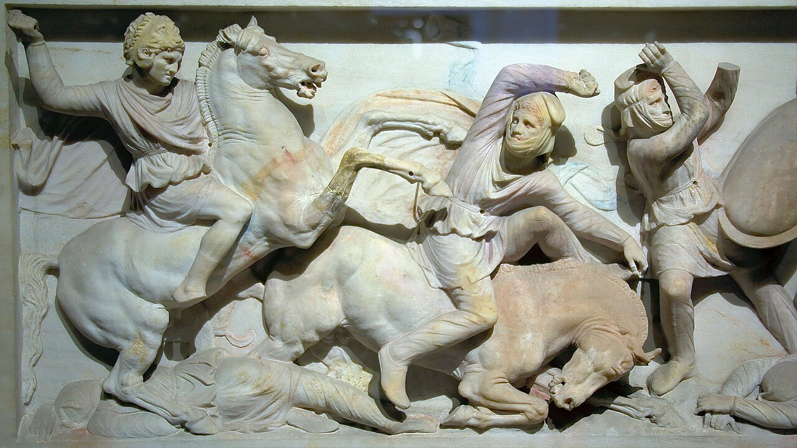
시돈의 「알렉산드로스 석관」 · 이스탄불 고고학 박물관. 실제로는 알렉산드로스의 것이 아닌 시돈 왕 압달로니무스의 것이지만, 측면에 이수스 전투의 알렉산드로스가 새겨져 있다. 헬레니즘 조각의 절정.
그가 마지막 숨을 거두기 전, 장군들이 "왕국을 누구에게 남기시겠습니까?"라 물었다. 그가 마지막으로 한 말이라 전해지는 답은 "가장 강한 자에게(τῷ κρατίστῳ)." 그리고 덧붙였다고 한다: "내 무덤 앞에서 친구들이 큰 장례 경기를 벌일 것이다."
곁가지 스물하나 — 죽음을 알린 징조들
마지막 몇 달간 알렉산드로스는 자신의 죽음을 예언하는 듯한 일들에 시달렸다. 사료가 전하는 사건들:
· 바빌론 입성 직전 칼데아 사제들이 "바빌론을 동쪽으로 들어가시면 죽으십니다" 경고했다. 알렉산드로스는 길을 돌려보려 했으나, 늪지대 때문에 결국 동문으로 들어가야 했다.
· 어느 날 그가 잠시 옥좌에서 일어났을 때, 한 죄수가 어디선가 나타나 빈 옥좌에 앉아 왕관과 망토를 걸쳤다. 점쟁이들은 이를 왕좌가 곧 비게 된다는 흉조로 풀이했고, 그 죄수는 처형되었다.
· 함대 사열 중 그가 쓴 흰색 머리띠가 바람에 날려, 한 갈대밭 위에 떨어졌다. 갈대밭은 옛 아시리아 왕묘들이 있던 자리였다.
곁가지 스물둘 — 살아생전 마지막 정치적 결단, "추방자 귀환령"
죽기 직전 알렉산드로스는 그리스 전역의 도시국가들에게 추방자 귀환령(Exiles Decree)을 내렸다 — 모든 정치적 추방자들을 고향 도시로 돌려보내라는 명령. 도시국가들의 주권을 정면으로 부정하는 결정이었다. 아테네와 아이톨리아 동맹이 격분했다. 알렉산드로스가 죽자마자(BC 323년 가을) 그들은 라미아 전쟁으로 봉기했고 — 그리스 도시국가의 마지막 자유의 저항이 되었다. 그들은 이듬해 패하고, 데모스테네스는 자살한다(독을 빤 펜으로). 그리스의 자유는 마침내 끝났다.
중국 — 같은 해
알렉산드로스가 바빌론에서 죽은 BC 323년, 중국에서는 진(秦) 혜문왕이 즉위 명년이었다. 진은 상앙의 변법으로 다져진 힘으로 위(魏)·초(楚)와 차례로 격돌하고 있었다. 알렉산드로스가 한 세대를 더 살았더라면, 그의 동방 원정과 중국의 통일 진군이 어디선가 부딪혔을지도 모른다.
인도
같은 무렵 펀자브에서는 찬드라굽타 마우리아가 거병하여 알렉산드로스의 잔류 사트라프들을 몰아내고 있었다. BC 321년경 그는 마가다의 나다 왕조를 무너뜨리고 마우리아 제국을 세운다 — 알렉산드로스가 죽은 지 2년 만이었다.
알렉산드로스 사망 시 그가 다스리던 영역
면적약 520만 km² — 당시 인류 역사상 최대.
건설한 도시약 20개의 "알렉산드리아"(이집트의 알렉산드리아·아프가니스탄의 칸다하르 등).
병사들의 행군 거리약 17,000 km(BC 334–325).
치른 정면 전투그라니쿠스·이수스·가우가멜라·히다스페스 — 전부 승리.
XVIII
사후 BC 323년 이후
디아도코이 갈라진 세계, 남은 그림자
강의 듣기
알렉산드로스의 시신은 황금 관에 담겨, 이집트로 가는 도중 그의 친구 프톨레마이오스가 호위대를 습격해 알렉산드리아로 빼돌렸다. 그곳에 세워진 "세마(Sēma)" — 알렉산드로스의 영묘는 천 년간 순례지였다. 율리우스 카이사르, 아우구스투스, 카라칼라가 그 무덤을 참배했다. 아우구스투스는 시신의 코를 부러뜨렸다 전한다. 그 후 영묘의 위치는 오늘날까지 알려져 있지 않다.
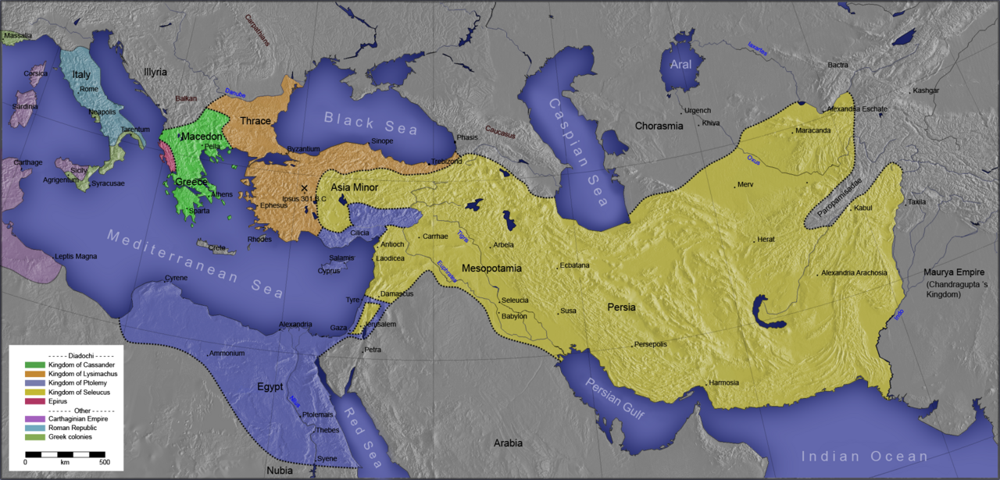
디아도코이(Diadochi)의 세계 · 알렉산드로스의 후계자들이 약 40년간 서로 죽고 죽인 끝에 제국은 셋으로 갈라졌다. 마케도니아의 안티고노스 왕조, 시리아·메소포타미아의 셀레우코스 왕조, 이집트의 프톨레마이오스 왕조.
록사네가 낳은 유복자 알렉산드로스 4세와, 알렉산드로스의 이복형제 필리포스 3세는 모두 그의 옛 친구들의 손에 살해되었다. 알렉산드로스의 어머니 올림피아스도, 그의 누이도, 그의 모든 직계 친족이 한 세대 안에 멸문했다. 마지막에 남은 것은 그가 길러낸 친구들이 세운 헬레니즘 왕국들이었다.
그러나 알렉산드로스가 진정 남긴 것은 왕국이 아니었다. 그가 흩뿌린 그리스어, 그리스 동전, 그리스 도시, 그리스 극장과 김나시온, 그리고 가장 깊게 "하나의 인류(homonoia)"라는 그의 (어쩌면 한순간의) 비전이었다. 박트리아의 도시에서 그리스 청년이 인도 청년과 함께 호메로스를 읽었고, 알렉산드리아의 도서관에서는 유다인과 그리스인이 70인역 성경을 함께 만들었다. 인도 북서부에서는 그리스-불교(Greco-Buddhism) 양식의 부처가 그리스 신의 옷을 입고 새겨졌다. 그 한 청년이 30대 초에 죽지 않았더라면 — 인류의 지도는 어떻게 그려졌을까.
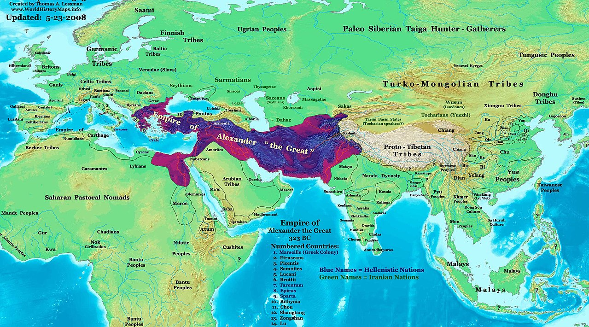
알렉산드로스 제국, BC 323년 · 발칸 반도의 한 작은 왕국에서 인더스 강까지. 그가 죽었을 때 그의 정복 영역에는 그의 이름을 딴 도시가 적어도 스무 곳 있었고, 마지막 황금 동전에는 아킬레우스의 후예가 동방의 신의 뿔을 단 모습으로 새겨져 있었다.
그는 모든 곳에 도달했으나, 어디에도 머무르지 못했다.
그가 정복한 것은 세계였고, 정복하지 못한 것은 시간이었다.
익명의 헬레니즘기 에피그램에 부쳐
곁가지 스물셋 — 그 후의 정복자들이 그의 무덤 앞에 섰을 때
알렉산드리아의 영묘는 천 년간 정복자들의 순례지였다. 한니발은 그를 흠모했다 — "세계 최고의 장군은 알렉산드로스, 그 다음은 피로스, 그 다음은 나"라 했다. 율리우스 카이사르는 33세에 스페인에서 알렉산드로스의 동상을 보고 눈물을 흘렸다 — "내 나이에 그는 세계를 정복했는데, 나는 아직 아무것도 하지 못했다." 아우구스투스는 알렉산드로스의 시신에 입을 맞추다가 코를 부러뜨렸다고 한다. 카라칼라 황제는 자신을 알렉산드로스의 환생이라 믿었다. 나폴레옹은 이집트 원정을 결심하며 — "나는 알렉산드로스를 따른다"고 적었다.
그 영묘는 4세기경 사라졌다. 어쩌면 지진으로, 어쩌면 기독교화 과정에서 파괴되었다. 오늘날 알렉산드리아 도심 어딘가 누구도 알지 못하는 흙 아래에 한 청년이 누워 있다. 그가 길었으리라 했던 잠을, 그 도시는 2,300년째 지키고 있다.
XIX
Aliae Visiones · 다른 시선들
다른 시선 — 세계가 그를 기억하는 방식
강의 듣기
한 사람의 인생이 다 끝난 다음, 그 인생을 어떻게 기억할지를 정하는 것은 죽은 자가 아니라 그를 만났던 모든 문명이다. 그리스가 새긴 영웅의 옆얼굴 너머에, 페르시아·아랍·인도·중세 유럽이 새긴 다른 알렉산드로스들이 있다.
① 꾸란의 「두 뿔의 자」 (Dhul-Qarnayn, ذو القرنين)
이슬람 전승에서 알렉산드로스는 꾸란 18장 「동굴의 수라(Sūrat al-Kahf)」에 등장한다. 메디나의 유대인들이 무함마드가 진짜 예언자인지 시험하려 코레이쉬에게 던지라 했던 세 가지 질문 중 하나가 "동쪽과 서쪽의 땅 끝에 다다른 한 여행자에 대해 묻거든, 그가 답하면 예언자다"였다. 무함마드는 그를 두 뿔의 자(Dhū al-Qarnayn)라 답했다 — 아몬의 뿔을 단 헬레니즘 동전 속 알렉산드로스의 도상이 700년을 건너뛰어 아랍 사막의 신앙 안에 박혀 있었다.
꾸란의 그 알렉산드로스는 정복자가 아니라 유일신의 종이다. 그는 서쪽 끝까지 가서 해가 "검은 진흙의 샘에 잠기는 것"을 보고, 동쪽 끝까지 가서 해가 떠오르는 들판을 보고, 두 산 사이에 사는 "거의 말을 알아듣지 못하는 종족"의 부탁을 받아 — 마지막 종말까지 야주즈와 마주즈(Yaʾjūj wa Maʾjūj, 곡과 마곡)를 가두는 거대한 철벽을 쌓는다. 종말의 날에는 그 벽이 무너지고 그들이 풀려나, 마지막 심판이 시작된다. 이슬람 신학자들은 그 벽이 카프카스의 데르벤트 협곡이라고도, 중국 만리장성이라고도 했다 — 어느 정복자도 자기 사후에 종말의 게이트키퍼가 되는 영광까지 누리지는 못했다.
[Qur'an 18:83–101 · Al-Islam.org, "Dhul Qarnayn" · Tafheem ul Qur'an]
② 페르시아 『샤나메』의 시칸다르 — 정복자가 동생이었던 이야기
천 년에 걸쳐 페르시아는 그를 자기 사람으로 만들었다. 11세기 피르다우시의 『샤나메(شاهنامه)』 6만 행의 시 가운데 약 2,500행이 시칸다르(Sikandar)에게 헌정되었다 — 이븐 무카파의 아랍어 번역을 거친 시리아어 『알렉산드로스 로망스』가 페르시아어로 다시 옷을 갈아입은 것이었다. 거기서 그는 그리스 침략자가 아니라 페르시아 왕 다라브의 친아들로, 죽어가는 페르시아 대왕 다라(다리우스 3세)의 머리를 무릎에 받쳐 안은 비통한 형이었다.
이야기는 더 멀리 간다. 페르시아 시칸다르는 생명의 샘(Āb-i Ḥayāt)을 찾아 어둠의 땅(Zulmāt)을 헤매고, 동방의 끝에서 말하는 두 나무 하나는 해를 향해 남자 목소리로, 다른 하나는 달을 향해 여자 목소리로 를 만난다. 두 나무는 그에게 예언한다: "너는 멀리서 죽으리라, 어머니 곁에 다시 가지 못하리라." 그는 묻지도 않은 채 알았다. 페르시아의 알렉산드로스는 그리스의 알렉산드로스가 한 번도 보여주지 않은 슬픔에 잠긴 운명의 청년이다.
인도와 아랍과 에티오피아까지, 25개 언어로 번역된 『알렉산드로스 로망스(Pseudo-Callisthenes)』 호메로스 다음으로 가장 많이 읽힌 고대 문학 의 모든 판본에 그 변형들이 살아있다. 알렉산드로스는 잠수종(diving bell)을 타고 바다 밑을 내려다보고, 그리핀에게 사슬을 매어 하늘로 올라가 세계를 굽어본다. 이 그림들은 중세 유럽의 채색 필사본을 가득 채웠다.
[Ferdowsi, Shāhnāmeh, "Eskandar" 부분 · Iranica, "Eskandar-nāma" · Pseudo-Callisthenes, The Greek Alexander Romance]
③ 조로아스터교의 '저주받은 자(Gizistag)' — 분서갱유의 그리스 판본
같은 시기 페르시아의 다른 쪽 입에서는 정반대의 이름이 불렸다. 사산조의 조로아스터교 사제들은 그를 "사악한 아흐리만의 영혼을 입은 자, 가지스타크 알렉산드로스(gizistag Alaksandar ī Hrōmīg)"라 불렀다. 죄는 분명했다 — 그가 12,000장의 황소가죽에 황금 잉크로 쓰여 페르세폴리스에 보관되어 있던 원본 『아베스타』를 불태웠다. 그가 마기들을 학살해 구전의 사슬을 끊었다. 그가 페르시아의 통일 왕권을 깨뜨려, 500년 동안 페르시아가 작은 왕국들로 살게 만들었다.
『아르다 비라프 나마그』의 첫머리는 단호하다 — "저주받은 자, 사악한 정신을 품은 로마인(=그리스인) 알렉산드로스가 이란땅에 들이닥쳐, 큰 폭정과 살인과 약탈을 저질렀다." 한 사람을 두고 그리스가 새긴 영웅 시(epos)와 페르시아가 부른 저주의 어록(curse-formula)이, 같은 한 청년의 양옆에 서서 서로 마주 본다.
[Encyclopaedia Iranica, "Alexander the Great II" · Ardā Wīrāz Nāmag 1.1–9 · British Library Asian Studies Blog 2023]
④ 단테 『신곡』 — 끓는 핏물에 잠긴 폭군 / 림보의 고결한 영혼
중세 가톨릭 세계는 그를 두 번 매장했다. 단테 알리기에리의 『신곡』 「지옥편」 12곡에서, 알렉산드로스는 디오니시오스 시라쿠사의 폭군과 나란히 폭력자들의 강 플레게톤(Phlegethon)의 끓는 핏물에 머리만 내놓은 채 영겁의 형벌을 받는다. 켄타우로스 네소스가 베르길리우스에게 가리킨다: "저기, 머리카락이 검은 사람은 알렉산드로스 — 그가 흘리게 한 피의 강에 그가 잠겨 있다." 폭력의 죄가 그 사람의 본성에 새겨졌다는 단테의 단죄였다.
그러나 같은 『신곡』 안에서 단테는 그를 한 번 더 본다. 「지옥편」 4곡, 림보의 고결한 이교도들 호메로스·소크라테스·플라톤·카이사르 가운데, 알렉산드로스의 그림자가 한 자리를 차지하고 있다. 중세의 가장 엄정한 도덕 시인조차 그를 한 자리에 가두지 못했다. 그는 피의 강과 고결한 림보에 동시에 있다 — 두 곳에 있을 만큼 큰 인생이었기 때문에.
[Dante Alighieri, Inferno XII.107, IV.130]
⑤ 시돈의 석관 — 그를 위해 만들어지지 않은, 그러나 그를 새긴 돌
1887년 레바논 시돈의 왕묘 지하에서, 마치 어제 깎은 듯 깨끗한 마르모 석관 하나가 발굴되었다. 그 측면에는 페르시아인들과 마케도니아인들이 사자를 함께 사냥하는, 그리고 그 옆 면에는 한 청년이 사자 머리 가죽을 머리에 쓰고 페르시아 기병을 창으로 꿰뚫는 살아 움직이는 듯한 부조가 새겨져 있었다. 그 청년은 알렉산드로스였다. 학자들은 처음 이를 알렉산드로스의 석관이라 불렀다.
그러나 석관의 주인은 알렉산드로스가 아니라, 그가 이수스 직후 시돈의 왕좌에 앉힌 정원사 출신의 친 페르시아계 왕 압달로니무스(Abdalonymus)였다. 정복자의 모습이, 정복된 도시의 왕이 자신의 석관에 새기고 싶었던 영광의 도상이 된 것이다 — 피정복자가 정복자를 자기 무덤에 그려넣고 싶어한 거의 유일한 사례. 그 석관은 지금 이스탄불 고고학 박물관의 중앙홀에 있다. 헬레니즘 조각의 정점이자 — 그가 만난 어떤 한 사람의 마음을 어떻게 사로잡았는지를 보여주는 가장 명료한 증거다.
[Istanbul Archaeological Museum, "Alexander Sarcophagus" · Ancient World Magazine]
⑥ 영화·동상·공항 — 21세기까지 식지 않은 분쟁
그는 2,300년이 지나서도 외교 분쟁을 일으킨다. 2006년, 북마케도니아 공화국(당시 마케도니아 공화국)이 스코페 국제공항을 "알렉산드로스 대왕 공항"으로 개명하고 수도 광장에 22m 청동상을 세우자, 그리스가 격분했다. "알렉산드로스는 그리스인이다 — 슬라브계 도시국가의 이름이 될 수 없다." 이 분쟁은 EU·NATO 가입까지 묶었다. 결국 2018년 프레스파(Prespa) 협정으로 마케도니아가 국명을 '북마케도니아'로 바꾸고, 공항에서 알렉산드로스의 이름을 떼어내면서 — 알렉산드로스 사후 2,300년 만의 외교 휴전이 성사되었다.
같은 알렉산드로스가 이란의 학교 교과서에서는 여전히 "신전을 불태운 자"로, 이집트에서는 알렉산드리아라는 도시 이름을 통해 매일 호명되며, 파키스탄 칼라샤 부족은 자신들이 그의 잔류 병사의 후예라 자처한다(2014년 유전자 검사가 이를 부정했지만, 그 자긍심은 오늘도 그대로다). 그리고 — 2004년 올리버 스톤 감독의 영화 「알렉산더」는, 콜린 패럴이 분한 알렉산드로스와 헤파이스티온의 관계를 암시했다는 이유로 그리스 변호사 25명이 워너브라더스를 상대로 소송을 제기하는 진풍경을 빚었다. 변호사들은 시사회 후 "예상보다 점잖다"며 소송을 취하했다. 흥행은 참담했지만 한 청년이 죽은 지 2,300년 만에 다시 법정에 서야 했다는 사실 자체가, 그가 여전히 현재진행형이라는 증거였다.